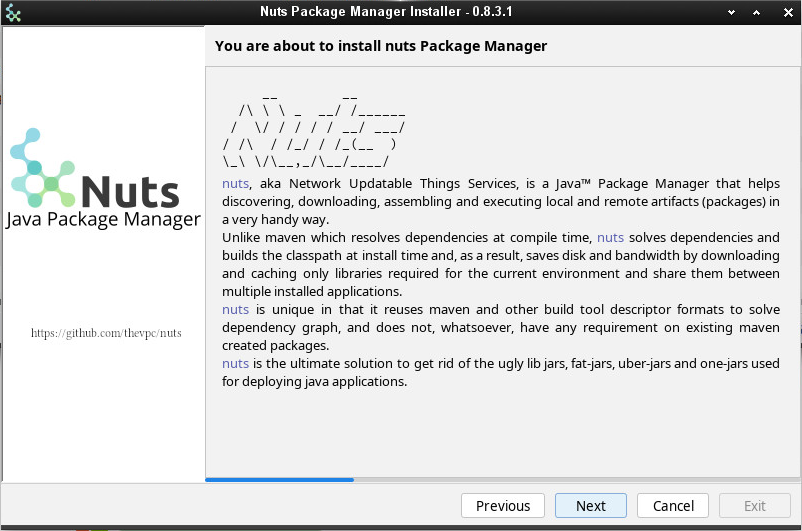
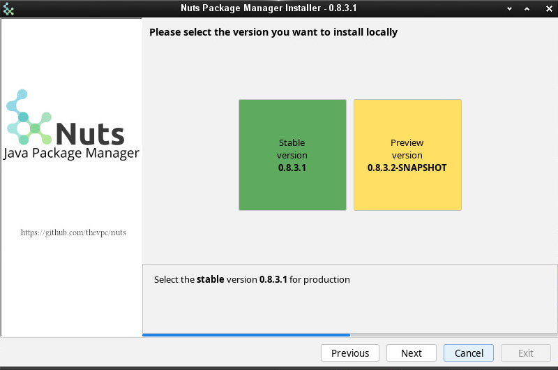
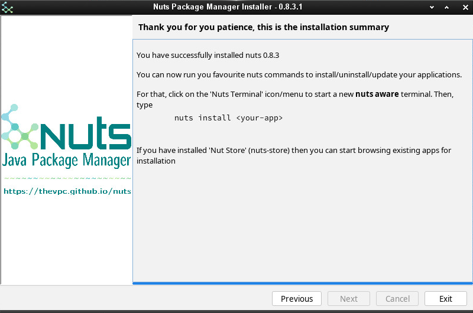
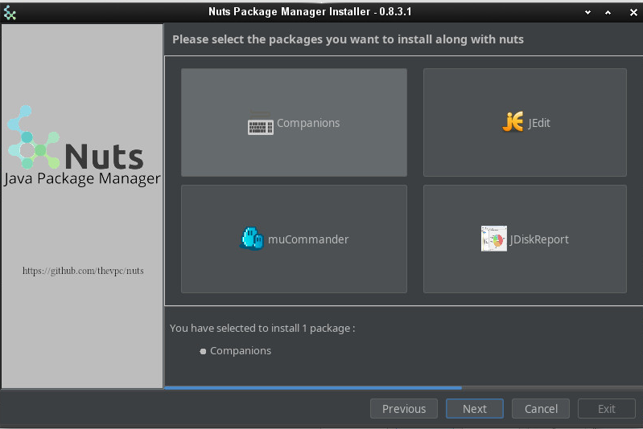
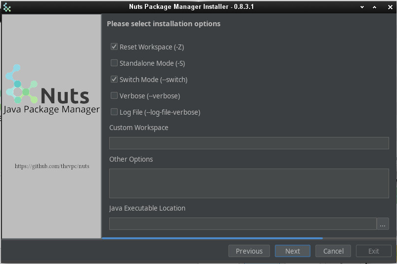

1 Introducing Nuts
nuts is a powerful and versatile open-source package manager designed to simplify software dependency management and enhance development workflows across a wide range of projects. Whether you're working on a small personal project or a large-scale enterprise application, nuts offers a streamlined and efficient way to manage libraries, tools, and dependencies, enabling you to focus on building and innovating. With its intuitive interface and robust features, nuts supports seamless integration into existing workflows, providing flexibility and scalability for developers of all levels. Basically, it is what npm is for Javascript and pip for Python. However, nuts presents several unique features that make it suitable for other technologies as well. This documentation is your gateway to understanding and utilizing the full potential of nuts, covering everything from installation and basic setup to advanced usage patterns and customization options. For additional resources, detailed guides, and further insights into how Nuts can empower your development process, visit this link. Let’s dive in and explore what makes nuts a game-changer for modern development!
1.1 Java Package Manager
nuts stands for Network Updatable Things Services tool and is a portable package manager for java (mainly) that handles remote artifacts, installs these artifacts to the current machine and executes such artifacts on need.
nuts solves the fatjar problem delegating the dependency resolution to the time when the application is to be executed and simplifies the packaging process while being transparent to the build process. Actually, nuts uses maven pom descriptors to resolve dependencies when the artifact is installed on the target machine, and it can use also other types of descriptors for other types of packages.
nuts artifacts are stored into repositories. A repository may be local for storing local artifacts or remote for accessing remote artifacts (good examples are remote maven repositories). It may also be a proxy repository so that remote artifacts are fetched and cached locally to save network resources.
One manages a set of repositories called a workspace (like virtualenv in pip). Managed nuts (artifacts) have descriptors that depicts dependencies between them. This dependency is seamlessly handled by nuts (tool) to resolve and download on-need dependencies over the wire.
nuts is a swiss army knife tool as it acts like (and supports) maven build tool to have an abstract view of the artifacts dependency and like npm and pip language package managers to install and uninstall artifacts allowing multiple versions of the very same artifact to be installed. nuts is not exclusive for Java/Scala/Kotlin and other Java Platform Languages, by design it supports multiple artifact formats other than jars and wars and is able to select the appropriate artifacts and dependencies according to the current OS, architecture and even Desktop Environment.
nuts common verbs are:
exec : execute an artifact or a command
which : detect the proper artifact or system command to execute
install, uninstall : install/uninstall an artifact (using its fetched/deployed installer)
update,check-updates : search for updates
deploy, undeploy : manage artifacts (artifact installers) on the local repositories
fetch, push : download from, upload to remote repositories
search : search for existing/installable artifacts
welcome : a command that does nothing but bootstrapping nuts and showing a welcome message.
1.2 Nuts and Maven
You'd still be Maven, yet you gonna be Nuts
Is there any package manager for Java(TM) applications? You can google for it and you will find that many have queried this on blogs and forums. In most cases responses point to maven and gradle, the tremendous build tools. However, both maven and gradle are build tools, while helping build packages they lack of deployment features. They bundle every dependency in every package (think of wars, ears and standalone jars). They do not handle installation or upgrading. Apache ivy, as well, while competing with maven build tool does not provide more than transitive dependency management. The main idea behind a package manager is the automation of installation, update, configuration and removal of programs or libraries in a coherent manner with the help of a database that manages binaries and metadata. maven, to consider one, sticks to the build process, an goes no further. You may also ask, "Why ever, do we need a package manager for Java(TM) applications". Okkay, let's take some example of Java(TM) applications. How can we install apache netbeans IDE ? The proper way is to browse to the editor's website, select the proper mirror if applicable, download the archive, uncompress it, chmod the main binary (i'm a linux guy) and adjust PATH environment variable to point to this binary; Quite a pain. What do we do to update it now? Hopefully, the IDE has a solid plugin architecture and an in-app update/upgrade tool that will help the process (in a gui manner of course). The same applies to eclipse and apache tomcat with the exception that apache tomcat does not even bundle an in-app update tool. The same applies too when dealing with other operating systems (Windows, MacOS, ...). Managing Java(TM) applications is far from helpful. Furthermore, as Java(TM) applications are (usually) not bundled in OS-aware installers, you will end up with a spaguetty home directory with applications installed all over your partitions, which - simply - does not mix up with all the work OS-developers have done to separate logs from data, from temporary files, from binaries, etc. Each application will handle it's files in a very specific manner that would make it hard to manage own's disk (automatic archive/backup/restore) or roaming applications across machines, etc. Moreover, in a world of containers and devops, deployments of Java(TM) applications need to be automatable and reproducible with the highest level of simplicity, configurability and integrability. Installing tomcat on a custom port should not not be as painful as using a custom Docker image or a complicated Dockerfile or even a custom apache tomcat bundle.When we recall that Java(TM) is the one language that has the more versatile number of libraries, frameworks and tools, I find it annoying not to have a decent package manager to make the leap and provide facilities I find prime in other languages and platforms (pip/python, npm/nodejs/javascript) and most of linux distribution (zypper/opensuse, dnf/redhat apt-get/debian/ubuntu)
Hence I'm introducing here a humble attempt to provide a tiny (300ko) yet powerful package manager for Java(TM) applications (but not only) that should handle jar files seamlessly (with little or no modification) and that comes with a set of portable tools that makes this management at a higher level. I'm not talking about redefining the wheel. I'm aware that many tools such as maven, are already very good at what they do, I just needed to make the leap for deployments. You will be able to deploy your applications without bundling all of their dependencies : nuts will take care of that.
So you'd still be maven, yet you gonna be nuts.
Nuts Package manager
nuts is actually :
- a transitive dependency resolution manager
- a package manager (backports maven and supports maven repositories)
- an automation tool
- a feature rich toolset
- an application framework
- decentralized
- sandbox based
Transitive dependency resolution manager
nuts calculates transitive dependencies of an application to resolve other packages to download at install or update/upgrade time. So typically, deployed applications should no more bundle their dependencies within the deployed archive. Thus we avoid the annoying fat jars (using maven plugins like 'maven-assembly-plugin' and 'maven-shade-plugin') and lib folders (using 'maven-dependency-plugin'). It will also reuse dependencies and packages across multiple installed applications and hence save disk space, and network bandwidth.
All what nuts needs is a descriptor file withing the jar file that defines the immediate dependencies. It then calculates all transitive dependencies automatically. And guess what, all maven built jars already contain that descriptor : the pom.xml file. So basically all maven applications are already nuts aware applications.
Package manager
nuts uses this dependency resolution to help install, update, remove and search for applications. To be able to use an application, it has to be installed and configured with all of its dependencies. This is the main goal of nuts. When we ask to install tomcat, for instance, it will search for the best version in registered repositories, download it, and configure it to be ready for execution. The best version is not always the the latest one. Actually it would be the latest valid one, thus the latest one that matches some constraints. Constraints include the version of the running java (tomcat 8 works on java 7 but not 6 for instance), the running operating system (windows, linux, ... to help selecting the proper binaries), may be the hardware architecture or even the operating distribution (for linux based systems). Constraints will filter the search result to include the best, the most accurate version to install. Installation also would configure the installed application and even may run another artifact to help this configuration.
nuts also handles search for newer versions and update the installed application at request. Updating a software does not necessarily delete the older version. Both version can coexist and it is up to the user the decide whether or not to retain both versions. Indeed, one of the key features of nuts is the ability to install and hence run multiple versions of the same software in parallel. You would never see an error message telling you can't install that software because a dependency of it is installed with different version. All software and all libraries can coexist peacefully.
Software artifacts are stored in repositories. nuts can handle multiple repositories, remote and local ones. Installed software are stored in special local repositories. Supported repositories include maven repositories and github repositories. Actually a fresh installation of nuts is configured with maven central repository so that, you already have access to thousands of installable artifacts.
At some point, you may need to uninstall an artifact and that's to undo the artifact installation. Installation will help you choose between uninstalling binaries only and keeping data/config files or remove permanently all of the artifact files. In all ways, uninstalling will not affect other artifacts that use the same dependencies if ever.Feature rich Toolset
nuts is intended to be used either by human users or by robots and other applications. It comes with portable, feature rich toolset, a versatile library and a handy parsable result.
nuts is mainly a commandline program that helps installing, uninstalling, searching, updating and running artifacts. To help desktop integration, nuts installs by default a set of other companion tools such as nsh (a portable bash-compatible implementation), and nadmin (an administration tool for nuts to configure users, authorizations, repositories, create scripts,...);
nsh brings the bash facilities to all environments (windows included) in a very portable manner. Besides it integrates well with the installed nuts version. Several common commands are ported to nsh such as cat,head, and ssh, as well as core features like pipes, redirection and scripts.
nadmin is intended for configuring nuts workspaces, managing repositories and users. It helps also configuring sub commands and aliases to make nuts usage even easier.
Nuts Workspaces
One of the key features of nuts is the ability to support multiple isolated workspaces, each managing it's own repositories, applications and libraries; each defining it's sandbox security constraints. Thus non-root installation is made easy while it remains possible to overlap between workspaces by sharing repositories. Roaming is also supported, so that a workspaces can be copied/moved across machines.
Application Framework
nuts can also be embedded as a library in you application. This enables you to wire classes on the fly by its network dependency-aware classloading mechanisms. The library allows as well building solid and well integrated applications, mainly console applications. Indeed, nuts comes with rich outputs that support automatic formatting to json, xml, table, tree and plain texts. It handles standard File Systems layouts; XDG Base Directory Specification is implemented for linux and MacOS. A compatible one is also implemented in Windows systems. And of course, it helps seamlessly install, update and remove events.
Nuts ? Really ?
In every palace you will find the wizard and the fool, the maven and the nuts; There's no exception in the java kingdom! If you do prefer acronyms here is another reason : nuts stands for Network Updatable Things Services. It should be able to facilitate things deployment and update over the wire where things resolve here to any piece of software depending (or not) on other piece of software.
1.3 First example
Let's start the journey
Get started by running your first application. Nuts is not a build tool (like maven and gradle). Nuts is more likely to be compared with nodejs npm or python's pip
It consists mainly of a commandline application that is used to install, uninstall and run other java applications in a smooth elegant way.What you'll need
java compatible operating system including [Linux],[Windows] and [MacOS]
java version 1.8 or above. JRE is sufficient, JDK allows you to do more with nuts
java --version
But in the following example, I am assuming you are using a Linux distribution et MacOS. If you are using Windows please refer to the installation section.
Installing and Running Nuts
We start by opening a new terminal (term, konsole or whatever you prefer) then download nuts using this command : On linux/MacOS system we issue :
curl -sOL https://thevpc.net/nuts/nuts-stable.jar -o nuts.jar && java -jar nuts.jar -Zy
We used the flags -y to auto-confirm and -z to ignore cached binaries (combined here as -zy). These flags are optional and are used here to demonstrate some of Nuts' available options. The installation process may take several minutes, as it involves downloading all required dependencies, companions, and tools.
You should then see this message
Welcome to nuts. Yeah, it is working...
nuts is well installed, just restart your terminal.
Now we will install jedit, a tremendous underrated text editor. So in your terminal type:
nuts install org.jedit:jedit
nuts jedit
As you can see, simple commands are all you need to download, install, configure and run jedit or any java application that is deployed in the maven repository.
So please visit nuts website or github repository for more information.
1.4 License
This program is free software; you can redistribute it and/or modify it under the terms of the GNU General Public License as published by the Free Software Foundation; either version 3 of the License, or (at your option) any later version. This program is distributed in the hope that it will be useful, but WITHOUT ANY WARRANTY; without even the implied warranty of MERCHANTABILITY or FITNESS FOR A PARTICULAR PURPOSE. See the GNU General Public License for more details. You should have received a copy of the GNU General Public License along with this program; if not, write to the Free Software Foundation, Inc., 51 Franklin Street, Fifth Floor, Boston, MA 02110-1301 USA. Copyright (C) 2016-2022 thevpc1.5 Other Resources
To help you get started and explore its capabilities, we've compiled a selection of resources, including comprehensive documentation, technical presentations, and detailed PDF guides. These materials cover everything from installation and configuration to advanced usage scenarios, ensuring you have all the information needed to make the most of Nuts. Below, you’ll find a curated list of links to these resources for easy access:- Offline user documentation
- Nuts Rationale
- Nuts Components
Nuts APIFeel free to explore these resources and dive deeper into what Nuts has to offer!
1.6 Running Nuts
In this section we will consider the simplest usage of nuts package manager.
Running a deployed artifact
You can run any jar using nuts as far as the jar is accessible from one of the supported repositories. By default, nuts supports:
- maven central
- local maven folder (~/.m2)
Artifact Long Ids
nuts long ids are a string representation of a unique identifier of the artifact. It has the following form :
groupId:artifactId#version
for instance, to install netbeans-launcher (which is a simple UI helping launch of multiple instances of netbeans), you can issue
nuts net.thevpc.app:netbeans-launcher#1.2.2
nuts netbeans-launcher
In this form, nuts will auto-detect both the groupId and the version. The group id is detected if it is already imported (we will see later how to import a groupId). By default, there is a couple of groupIds that are automatically imported :
.thevpc(contains various applications of the author).thevpc.nuts.toolbox(contains various companion tools of nuts, such as nsh, ...)
And it turns out, hopefully, that netbeans-launcher belongs to an imported groupId, so we can omit it. Besides, if no version is provided, nuts will also auto-detect the best version to execute. If the application is already installed, the version you choose to install will be resolved. If you have not installed any, the most recent version, obviously, will be detected for you.
Artifact Installation
Any java application can run using nuts but it has to be installed first. If you try to run the application before installing it, you will be prompted to confirm installation. To install our favorite application here we could have issued :
nuts install netbeans-launcher
Multiple Artifact version Installation
One of the key features of nuts is the ability to install multiple versions of the same application. We can for instance type :
nuts install netbeans-launcher#1.2.2
# then
nuts install netbeans-launcher#1.2.0
nuts netbeans-launcher#1.2.2 &
# or
nuts netbeans-launcher#1.2.0 &
nuts netbeans-launcher &
Searching artifacts
Now let's take a look at installed artifacts. We will type :
nuts search --installed
nuts search --installed -l
I-X 2019-08-21 04:54:22.951 anonymous vpc-public-maven net.thevpc.app:netbeans-launcher#1.2.0
i-X 2019-08-21 04:54:05.196 anonymous vpc-public-maven net.thevpc.app:netbeans-launcher#1.2.2
The first column here is a the artifact status that helps getting zipped information of the artifact. the 'I' stands for 'installed and default' whereas, 'i' is simply 'installed'. The 'X' stands for 'executable application', where 'x' is simply 'executable'. Roughly said, executable applications are executables aware of (or depends on) nuts, as they provide a special api that helps nuts to get more information and more features for the application. As an example, executable applications have special OnInstall and OnUninstall hooks called by nuts. The second and the third columns are date and time of installation. The fourth column points to the installation user. When Secure mode has not been enabled (which is the default), you are running nuts as 'anonymous'. The fifth column shows the repository from which the package was installed. And the last column depicts the artifact long id.
Running local jar file with its dependencies
Let's suppose that my-app.jar is a maven created jar (contains META-INF/maven files) with a number of dependencies. nuts is able to download on the fly needed dependencies, detect the Main class (no need for MANIFEST.MF) and run the application. If a Main-Class Attribute was detected in a valid MANIFEST.MF, il will be considered. If more than one class is detected with a main method, nuts will ask for the current class to run.
When you run a local file, nuts will behave as if the app is installed (in the given path, an no need to invoke install command). Local files are detected if they are denoted by a valid path (containing '/' or '' depending on the underlying operating system). Dependencies will be downloaded as well (and cached in the workspace)
nuts ./my-app.jar some-argument-of-my-app
nuts --exec -Xms1G -Xmx2G ./my-app.jar argument-1 argument-2
2 Installation
nuts is a package manager for the Java Platform. Basically, it is what npm is for Javascript and pip for Python. However, nuts presents several concepts that make it suitable for other technologies as well.
2.1 Tutorial
import Tabs from '@theme/Tabs'; import TabItem from '@theme/TabItem';GUI Installation
You can install nuts using a gui installer. Multiple targets are available. You may select a portable installer (a jar that you can double click as far as you have a valid java+ runtime installed and configured in your environment). You may also want to select a native image for the installer; you only need to download and run.


In the next step, you are asked to accept the OSS licence.
nuts comes with a dual version, stable and preview. Stable version is recommended in most cases. But if you want to take advantage of new features not yet released you may want to install the preview version.

The installer will even prompt you for selecting extra java applications you may want to install along with nuts. The only recommended apps are already selected and marked as Companions. This includes mostly nsh, a bash compatible implementation in Java.


Now the effective installation starts. You will see the progress in a colourful terminal.

And voilà! you now have reached the installation end. Just click on Exit.

If you check your system menu, you will notice some new icons, including a nuts aware terminal. On Linux and MacOs, you do not need such menu to run you favorite nuts command though. The Installer has already configured your shell rc files to include nuts in the execution PATH env variable.

Dark Mode
You may have chosen the Dark mode of course, and you would have crossed the following steps:





Your first commands
After installation, open any nuts aware terminal (on linux, any bash,zsh,fish,... terminal is ok).
$> nuts
$> nuts update
$> nuts search
$> nuts search 'net.thevpc.nuts.toolbox:*' --anywhere
net.thevpc.nuts.toolbox:nsh#0.8.5.0
net.thevpc.nuts.toolbox:ndoc#0.8.5.0
net.thevpc.nuts.toolbox:ndexer#0.8.5.0
net.thevpc.nuts.toolbox:njob#0.8.5.0
net.thevpc.nuts.toolbox:nmvn#0.8.5.0
net.thevpc.nuts.toolbox:nwork#0.8.5.0
net.thevpc.nuts.toolbox:nsh#0.8.5.0
net.thevpc.nuts.toolbox:ntomcat#0.8.5.0
net.thevpc.nuts.toolbox:ntalk-agent#0.8.5.0
net.thevpc.nuts.toolbox:ndiff#0.8.5.0
net.thevpc.nuts.toolbox:nserver#0.8.5.0
net.thevpc.nuts.toolbox:ndb#0.8.5.0
net.thevpc.nuts.toolbox:nversion#0.8.5.0
net.thevpc.nuts.toolbox:ncode#0.8.5.0
net.thevpc.nuts.toolbox:ndocusaurus#0.8.5.0
net.thevpc.nuts.toolbox:noapi#0.8.5.0
$> nuts install org.jedit:jedit
$> nuts jedit
$> nuts install njob
$> nuts update njob
$> nuts install netbeans-launcher
$> nuts netbeans-launcher
2.2 Running with Docker
docker pull eclipse/centos_jdk8
docker run -it eclipse/centos_jdk8 sh
docker pull xiaofengdi/oracle-jdk8
docker run -it xiaofengdi/oracle-jdk8 sh
docker pull bellsoft/liberica-runtime-container
docker run -it bellsoft/liberica-runtime-container sh
docker pull openjdk:8
docker run -it -v $(pwd):/workspace openjdk:8 sh
cd /workspace
wget https://thevpc.net/nuts/nuts-preview.jar -qO nuts.jar
java -jar nuts.jar -P=no -ZyS -r=+thevpc net.thevpc.nuts.toolbox:noapi#0.8.5.0 buat-insurance-connector.json
#############
$> java -version
java version "1.8.0_211"
Java(TM) SE Runtime Environment (build 1.8.0_211-b12)
Java HotSpot(TM) 64-Bit Server VM (build 25.211-b12, mixed mode)
Installation
download nuts-0.8.5.jar
java -jar nuts-0.8.5.jar -Zy
$ wget https://repo.maven.apache.org/maven2/net/thevpc/nuts/nuts/\
0.8.3/nuts-0.8.3.jar -qO nuts.jar
$ java -jar nuts.jar -Zy
$ exit
$ curl -sOL https://repo.maven.apache.org/maven2/net/thevpc/nuts/nuts/\
0.8.3/nuts-0.8.3.jar -o nuts.jar
$ java -jar nuts.jar -Zy
$ exit
$ curl -sOL https://repo.maven.apache.org/maven2/net/thevpc/nuts/nuts/\
0.8.3/nuts-0.8.3.jar -o nuts.jar
$ java -jar nuts.jar -Zy
$ exit
$ wget https://github.com/thevpc/vpc-public-maven/raw/master/\
net/vpc/app/nuts/nuts/0.8.3/nuts-0.8.3.jar \
-O nuts.jar
$ java -jar nuts.jar -y
$ curl -sOL https://repo.maven.apache.org/maven2/net/thevpc/nuts/nuts/\
0.8.3/nuts-0.8.3.jar -o nuts.jar
$ java -jar nuts.jar -Zy
$ exit

As you can see, installation upon first launch, will also trigger installation of other optional programs called "companion tools". The main recommended helpful is nsh (stands for Nuts Shell), is a bash compatible shell implementation application that will run equally on linux and windows systems.
Test Installation
To test installation the simplest way is to open a nuts-aware terminal and type :
nuts --version
0.8.3/0.8.3.1
Run a command
To run a command using nuts just type
nuts <command>
2.3 Installation in Production
import Tabs from '@theme/Tabs'; import TabItem from '@theme/TabItem';Installation of nuts in production is based on stable nuts binaries that are released according to a semi-annual schedule. Stable versions are deployed to maven-central and hence are made accessible very easily to all users. Releases include most of the time updates to the core nuts api (and bootstrap). Update/Fix releases can occur to fix blocking/serious/security issues is faster pace.
System Requirements
Here are all nuts requirements :
Java : nuts requires a valid Java Runtime Environment (JRE) or Java Development Kit (JDK) version 8 or above to execute. Please note that you need to update your 1.8 version to the latest update (update 150+)
System Memory: nuts memory footprint is very little and has no minimum RAM requirements.
Disk: 5Mo on the disk are required for the nuts installation itself. In addition to that, additional disk space will be used for your local Nuts workspace. The size of your local workspace will vary depending on usage but expect at least 500MB.
Operating System: nuts is able to run on any java enabled Operating System including all recent versions of Windows, Linux and MacOS.
java -version
$> java -version
java version "1.8.0_211"
Java(TM) SE Runtime Environment (build 1.8.0_211-b12)
Java HotSpot(TM) 64-Bit Server VM (build 25.211-b12, mixed mode)
Installation
download nuts-0.8.5.jar
java -jar nuts-0.8.5.jar -Zy
$ wget https://repo.maven.apache.org/maven2/net/thevpc/nuts/nuts/\
0.8.3/nuts-0.8.3.jar -qO nuts.jar
$ java -jar nuts.jar -Zy
$ exit
$ curl -sOL https://repo.maven.apache.org/maven2/net/thevpc/nuts/nuts/\
0.8.3/nuts-0.8.3.jar -o nuts.jar
$ java -jar nuts.jar -Zy
$ exit
$ curl -sOL https://repo.maven.apache.org/maven2/net/thevpc/nuts/nuts/\
0.8.3/nuts-0.8.3.jar -o nuts.jar
$ java -jar nuts.jar -Zy
$ exit
$ wget https://github.com/thevpc/vpc-public-maven/raw/master/\
net/vpc/app/nuts/nuts/0.8.3/nuts-0.8.3.jar \
-O nuts.jar
$ java -jar nuts.jar -y
$ curl -sOL https://repo.maven.apache.org/maven2/net/thevpc/nuts/nuts/\
0.8.3/nuts-0.8.3.jar -o nuts.jar
$ java -jar nuts.jar -Zy
$ exit
As you can see, installation upon first launch, will also trigger installation of other optional programs called "companion tools". The main recommended helpful is nsh (stands for Nuts Shell), is a bash compatible shell implementation application that will run equally on linux and windows systems.
Test Installation
To test installation the simplest way is to open a nuts-aware terminal and type :
nuts --version
0.8.3/0.8.3.1
Run a command
To run a command using nuts just type
nuts <command>
2.4 Installation (Preview Mode)
import Tabs from '@theme/Tabs'; import TabItem from '@theme/TabItem';Installation of nuts for preview/test/evaluation or simply for personal use is based on a rolling nuts binaries version that is released a faster pace than the production version (generally a semi-monthly schedule). Versions are not rock solid but still they are "very" usable and more importantly they include all latest features. Preview releases are deployed to a development repository and hence are made accessible using a repository swith option.
System Requirements
Here are all nuts requirements :
Java : nuts requires a valid Java Runtime Environment (JRE) or Java Development Kit (JDK) version 8 or above to execute. Please note that you need to update your 1.8 version to the latest update (update 150+)
System Memory: nuts memory footprint is very little and has no minimum RAM requirements.
Disk: 5Mo on the disk are required for the nuts installation itself. In addition to that, additional disk space will be used for your local Nuts workspace. The size of your local workspace will vary depending on usage but expect at least 500MB.
Operating System: nuts is able to run on any java enabled Operating System including all recent versions of Windows, Linux and MacOS.
java -version
$ java -version
java version "1.8.0_211"
Java(TM) SE Runtime Environment (build 1.8.0_211-b12)
Java HotSpot(TM) 64-Bit Server VM (build 25.211-b12, mixed mode)
Installation
download nuts-preview.jar
java -jar nuts-preview.jar -r=+preview -Zy
$ wget https://thevpc.net/nuts/nuts-preview.jar -qO nuts.jar
$ java -jar nuts.jar -r=+preview -Zy
$ exit
$ curl -sOL https://thevpc.net/nuts/nuts-preview.jar -o nuts.jar
$ java -jar nuts.jar -Zy
$ exit
$ wget https://thevpc.net/nuts/nuts-preview.jar -qO nuts.jar
$ java -jar nuts.jar -r=+preview -Zy
$ exit
$ curl -sOL https://thevpc.net/nuts/nuts-preview.jar -o nuts.jar
$ java -jar nuts.jar -r=+preview -Zy
$ exit
As you can see, installation upon first launch, will also trigger installation of other optional programs called "companion tools". The main recommended helpful is nsh (stands for Nuts Shell), is a bash compatible shell implementation application that will run equally on linux and windows systems.
Test Installation
To test installation the simplest way is to open a nuts-aware terminal and type :
nuts --version
0.8.5/0.8.5.0
Run a command
To run a command using nuts just type
nuts <command>
2.5 Nuts Cmdline Help
nuts is a Java™ Package Manager that helps discovering, downloading, assembling and executing local and remote artifacts (packages) in a very handy way. Unlike maven which resolves dependencies at compile time, nuts solves dependencies at install time and, as a result, saves disk and bandwidth by downloading and caching only libraries required for the current environment. Nuts is unique in that it reuses maven and other build tool descriptor formats to solve dependency graph, and does not, whatsoever, have any requirement on existing maven created packages. Nuts stands for Network Updatable Things Services tool. It is designed to support multiple package formats and even multiple languages (platforms like dotnet and python), even-though, the current implementation supports only java. nuts artifacts are stored into repositories. A repository may be local for storing local nuts or remote for accessing remote artifacts (good examples are remote maven repositories). It may also be a proxy repository so that remote artifacts are fetched and cached locally to save network resources. One manages a set of repositories called a workspace (analogous to pip 'virtualenv'). Managed packages (artifacts) have descriptors that depict dependencies between them. This dependency is seamlessly handled by nuts to resolve and download and cache on-need dependencies over the wire. nuts is a swiss army knife tool as it acts like (and supports) maven build tool to have an abstract view of the the artifacts dependency and like zypper/apt-get/pip/npm package manager tools to install and uninstall artifacts allowing multiple versions of the very same artifact to be installed. Although nuts focuses on Java™ artifacts, it still supports, by design, native and all non Java™ artifacts. Dependencies are fetched according to the current operating system type, distribution and hardware architectures. nuts works either as standalone application or as Java™ library to enable dynamic and dependency aware class loading and brings a rich toolset to provide a versatile portable command line tools such as nsh (a bash like shell), tomcat, derby ... wrapper tools to make it easier providing development , test and deployment reproducible environments. With container concepts in mind, nuts is the perfect Java™ application tool for Docker, CoreOs and other container engines. ##) COMMON VERBS: install,uninstall,update : install/uninstall/update an artifact (using its fetched/deployed installer) fetch,push : download, upload to remote repositories search : search for existing/installable artifacts exec : execute an artifact (tool) deploy, undeploy : manage artifacts on the local repositories ##) SYNOPSIS: nuts [<-options>]...... ##) VERSIONS: Boot API Version: ${nuts.workspace-boot.version} Boot Runtime Version: ${nuts.workspace-runtime.version} Java™ Version: ${java.version} (${java.vm.name}) ##) NUTS OPTIONS: There are four (4) types of options : * create options * create exported options * open options * open exported options create options are considered solely when creating a new workspace. They will be persisted then (to the configuration file) but they will be ignored elsewhere if the workspace already exists : configured parameters will be in use. create exported options are considered both when creating a new workspace and when running it. If they are specified in creation they will be persisted. If they are specified later they will override persisted values without persisting the changes open options are transient (non persistent) options that will override any configured value (if any) and will be in use in the current process (and ignored elsewhere). Such options will be considered in creating workspaces as well but still they are not persistent. open exported options are open (so transient, non persistent) options that will override any configured value (if any) having the ability to be exported to any Java™ child process (as system property -D...) ###) NUTS CREATE EXPORTED OPTIONS: --workspace (default is "" ad is equivalent to "default-workspace") -w workspace location to open (or create). this defaults to default-workspace. Typically this refers to ~/.config/nuts/default-workspace on *NIX Platforms* (when --system-conf-home is not specified). workspace location contains mainly config information. --user (default is "") -u workspace username. if not specified, all access to nuts will be with anonymous identity. so to promote user privileges, one may specify user credentials (see --password ) --password (default is "") -p workspace password. They must be provided when --user is present. -V (default is "" and points to the currently loaded api version) --boot-version --boot-api-version run a new/different instance of nuts with the specified version --sandbox=true|false (default is false ) when creating the workspace, generate a random workspace, for testing purposes. sandbox mode will be propagated/exported as --confined --confined=true|false (default is false ) use a confined workspace that does not allow user wide or system wide alteration --isolation=system|user|confined|sandbox (default is system ) use the level of isolation for the workspace --boot-runtime (default is "" and points to the latest compatible nuts-runtime artifact) load runtime (nuts-runtime) version. either version may be expressed or full nuts implementation (other than nuts-runtime) should be defined --java (default is "" and points to the currently loaded JVM executable) --boot-java -j Java™ command to run new instance of nuts --java-home (default is "" and points to the currently loaded JVM) --boot-java-home -J (default is "") Java™ home to run new instance of nuts. When Java™ command is present, this will be ignored. --java-options (default is "") --boot-java-options -J Java™ options to run new instance of nuts ###) NUTS CREATE OPTIONS: --archetype (default is "default") -A workspace archetype to create (if workspace not found). when opening a non existing workspace, nuts will create it using the default archetype. Supported archetypes are : default : should handle most cases. Will create 6 repositories local : containing local nuts (java and non java nuts). maven-local : referencing ~/.m2/repository local maven repository. maven-central : referencing https://repo.maven.apache.org/maven2/ (with cache support). system : referencing global (root, system wide) repository if available. This list can be altered using --repos options, using =, + and - modifiers. When you use --repos=+spring, or simply --repos=spring the spring repos will be appended to this list When you use --repos=-maven-central,system, you will disable both maven-central and system When you use --repos==maven-central, this list is totally replaced by 'maven-central' minimal : will create an almost empty workspace with a single nuts local repository and no users. You should use it in conjunction with --boot-repos options to enable a valid location from. This list is not altered using "--repos" options, using '=', '+' and '-' modifiers. which nuts would be downloaded as well. server : will create an almost empty workspace with a single nuts local repository and a couple of users guest (read support) and contributor (write support). You should use it in conjunction with --boot-repos options to enable a valid location from which nuts would be downloaded as well. --store-strategy (default is "exploded" for names and "standalone" for paths) Define store strategy used for persisting configuration and data of the workspace. Valid values of are exploded, standalone. exploded : use distinct folders for temp, var, lib, config ... folders (this is the default) standalone : use a self contained folder for all types of data of the workspace. This is interesting for sharing workspaces across multiple machines. If the workspace location (in --workspace option) is a simple name (without '/'), the store strategy defaults to exploded. In all other cases, it defaults to standalone -S --standalone (default is true for path based workspaces) will boot with standalone strategy so that all files will be stored in the workspace folder overriding workspace config. same as --store-strategy standalone --exploded-workspace (default is true for name based workspaces) will boot with exploded strategy so that all file will be stored distinct folders (cache, and log) particularly will be stored elsewhere depending on on configuration. same as --store-strategy exploded --repo-store-strategy (default is exploded for name based workspaces) Defines store strategy used for persisting config and data of the repositories. Valid values of are exploded, standalone. exploded : use distinct folders for temp, var, lib, config ... folders (this is the default) standalone : use a self contained folder for all types of data of the repository (under repository's main folder). This is interesting for sharing workspaces across multiple machines. --standalone-repositories (default false) for newly created repos, will boot with standalone strategy so that all file will be stored in the repository's folder overriding workspace config. same as --repo-store-strategy standalone --exploded-repositories (default true) for newly created repos, boot with exploded strategy so that all file will be stored distinct folders (cache, and log) particularly will be stored elsewhere depending on on configuration. same as --repo-store-strategy exploded (this is default) --standalone (default false if the workspace location is a simple name, and true if not) Equivalent of --standalone-workspace --exploded (default true if the workspace location is a simple name, and false if not) Equivalent of --exploded-workspace --store-layout (default use system layout) Defines store layout relatively to the running operating system. This resolves root locations of data folders. That is to say that all 'config' folders for instance will be located at the location defined by the layout. Valid values of are system, windows, linux, macos and unix system : resolve the running operating system (windows, linux, ...) and select appropriate folder windows : always use windows layout (even if running on iOS) linux : always use linux layout (even if running on windows) unix : always use linux/unix layout (even if running on windows) macos : always use macos layout (even if running on windows) Data folders of nuts are : apps : executable binaries folder. Equivalent to linux's '/bin' folder. It is defined as "base directory relative to which reusable executable applications and scripts should be written" lib : non executable binaries (libraries) folder. Equivalent to linux's '/usr/lib' folder. It is defined as "base directory relative to which reusable libraries should be written" config : configuration/settings files folder. equivalent to XDG spec's XDG_CONFIG_HOME folder defined as "base directory relative to which user-specific configuration files should be written" var : data files folder. More or less related to XDG spec's XDG_DATA_HOME folder. It is defined as "the base directory relative to which user-specific non executable data files should be stored" log : log/trace files folder. Equivalent to XDG_LOG_HOME a non standard XDG variable defined as "the base directory relative to which application non-essential data for trace and monitoring should be stored" temp : temporary files folder. Equivalent to user/system temp folder defined as "the base directory relative to which application temporary data should be stored" cache : cache folder. Equivalent to XDG spec's XDG_CACHE_HOME folder defined as "the base directory relative to which user-specific non-essential data files should be stored" run : run folder. Equivalent to to XDG spec's XDG_RUNTIME_HOME bin folder defined as "the base directory relative to which user-specific non-essential runtime files and other file objects (such as sockets, named pipes, ...) should be stored" In the Windows layout, default (home) locations resolve to ($HOME is the user's home folder) apps : "$HOME/AppData/Roaming/nuts/apps" lib : "$HOME/AppData/Roaming/nuts/lib" config : "$HOME/AppData/Roaming/nuts/config" var : "$HOME/AppData/Roaming/nuts/var" log : "$HOME/AppData/Roaming/nuts/log" temp : "$HOME/AppData/Local/nuts/temp" cache : "$HOME/AppData/Local/nuts/cache" run : "$HOME/AppData/Local/nuts/run" In the Linux/Unix/MacOS layout, default locations resolve (according to XDG Base Directory Specification) to ($HOME is the user's home folder) config : "$HOME/.config/nuts" apps : "$HOME/.local/share/nuts/apps" lib : "$HOME/.local/share/nuts/lib" var : "$HOME/.local/share/nuts/var" log : "$HOME/.local/log/nuts" cache : "$HOME/.cache/nuts" temp : "$java.io.tmpdir/$username/nuts" run : "/run/user/$USER_ID/nuts" These home locations are tuned individually using the following options --system-bin-home --system-lib-home --system-conf-home --system-var-home --system-log-home --system-temp-home --system-cache-home --system-run-home -- -bin-home -- -lib-home -- -conf-home -- -var-home -- -log-home -- -temp-home -- -cache-home -- -run-home where in one of windows, linux, unix, macos or system. This helps moving workspace folder from/to distinct os families while providing a centralized configuration. when using system OS family, the effective OS family will be detected at runtime. --system-layout or --system(default behaviour) will use current system layout to resolve folder candidates for log,config,apps .... same as sh --store-layout system --windows-layout (default is true on windows systems) will use windows layout to resolve folder candidates for log,config,apps .... same as --store-layout windows --linux-layout (default is true on linux systems) will use linux/unix layout to resolve folder candidates for log,config,apps .... same as --store-layout linux More tuning of these folders may be done by defining the folders location directly instead of the folder's home locations using the following options : --bin-location --lib-location --config-location --var-location --log-location --temp-location --cache-location --run-location --install-companions or -k (default is false) install companion tools. --switch (default is false) When creating a new workspace, by default, only default workspace (--workspace="") updates .bashrc file (or equivalent, according to the current installed and used shell) to point to that workspace. So that, when you type nuts it is that workspace that is used. You can change choose to "switch" the binding to the currently created workspace by arming this flag. --init-scripts (default is true for default archetype) When creating a new workspace, you can select to enable or disable creation of os shell scripts to point to nuts and other installed artifacts using --!init-scripts flag. --init-launchers (default is true for default archetype) When creating a new workspace, you can select to enable or disable creation of menus and desktop icons by using --!init-launchers flag. This option implies --init-scripts --init-java (default is true for default archetype) When creating a new workspace, you can select to enable or disable registration of installed JDK/JRE in the system by using --!init-java flag. This option implies --init-scripts --init-platforms (default is true for default archetype) When creating a new workspace, you can select to enable or disable registration of installed platforms (including java) in the system by using --!init-platforms flag. This option implies --init-java
3 Nuts Concepts
Nuts Concepts
nuts introduces a set of unique concepts that are important to leverage. These concepts are mainly introduced for portability and repeatability.
3.1 Aliases, Imports & Launchers
Aliases, Imports and launchers, are three features in nuts where you can call artifacts with a simple word instead of using the full id. Indeed, usually, artifacts are uniquely identified by groupId, artifactId, version and classifier (whenever applicable). This is kind of cumbersome if most of the cases:
nuts net.thevpc.toolbox.nsh:nsh#0.8.5.0
Imports
Imports help you discard groupId and call/install artifacts using only artifactId. You can as an example import 'com.my-company' and as a result any artifact under 'com.mycompany' is resolved automatically. Actually 'com.my-company:my-app' and 'com.my-company.my-app:my-app' are
nuts net.thevpc.toolbox.nsh:nsh#0.8.5.0
# becomes
nuts settings add import net.thevpc.toolbox
# now call it simply with
nuts nsh#0.8.5.0
# or even simpler with
nuts nsh
Aliases
Aliases help you define your own command by calling existing artifacts and defining some arguments as well. It is very similar to shell aliases where you define ll as an alias to /bin/ls -l for example.
nuts net.thevpc.toolbox.nsh:nsh#0.8.5.0
# becomes
nuts settings add alias ll='net.thevpc.toolbox.nsh:nsh#0.8.5.0 -c ls -l'
# now call it simply with
nuts ll
Launchers
Launchers help you define your own system command by calling nuts with existing artifacts and even creating Desktop Environment Shortcuts and Icons (whenever GUI is applicable).
nuts net.thevpc.toolbox.nsh:nsh#0.8.5.0
# becomes
nuts settings add launcher --menu --desktop 'net.thevpc.toolbox.nsh:nsh#0.8.5.0'
# now call it simply click on the desktop icon or open via system menu
3.2 Automation
nuts has been designed and implemented with automation and devops philosophy in mind.
nuts Application Framework infrastructure provides a seamless support process automation with structured output, including json, xml, yaml, tson and so on. You can for instance call the POSIX ls command and get the file list as json. You can then process this json
and extract meaningful information and pass it to the next command using standard pipe mechanism. Think of this as a general pattern for any and all commands you can run via nuts. Besides, automation includes dynamic classloading of on-the-fly dependencies (remotely resolved and downloaded) to make usage of a feature you need such as installing a tomcat version that is compatible with the jre version you run. Automation requires also partitioning, isolation, sand-boxing, security reinforcements and portability. This is ensured by workspace feature that helps isolating the application dependencies from other applications, authentication and authorisation mechanisms to limit access to nuts configurations (and hence available repositories used for dependency resolution) and to system resources (running with or without elevated privileges) and finally environment adaptability to handle appropriate support for each architecture (x86_32,itanium_64,...), operating system (linux, windows,...), shell (bash, zsh,...), platform (java, dotnet, ...) and desktop environment.Install Automation
TODO...Structured Output
TODO...Environment Sensitive
TODO...Multi Platform
TODO...Workspace Isolation
TODO...Security Mechanisms
TODO...3.3 Command Line Arguments
nuts supports a specific format for command line arguments. This format is the format supported in nuts Application Framework (NAF) and as such all NAF applications support the same command line arguments format. Arguments in nuts can be options or non options. Options always start with hyphen (-).
Short vs Long Options
Options can be long options (starts with double hyphen) or short options (start with a single hyphen). Many arguments support both forms. For instance "-w" and "--workspace" are the supported forms to define the workspace location in the nuts command.Valued / Non-valued Options
Options can also support a value of type string or boolean. The value can be suffixed to the option while separated with '=' sign or immediately after the option. As an example, all are equivalent.
nuts -w=/myfolder/myworkspace
nuts -w /myfolder/myworkspace
nuts --workspace /myfolder/myworkspace
nuts --workspace=/myfolder/myworkspace
Boolean Options
Particularly, when the value is a boolean, the value do not need to be defined. As a result "--install-companions" and "--install-companions=true" are equivalent. However "--install-companions true" is not (because the option is of type boolean) and "true" will be parsed as a NonOption.To define a "false" value to the boolean option we can either suffix with "=false" or prefix with "!" or "~" sign. Hence, "--install-companions=false", "--!install-companions" and "--~install-companions" are all equivalent. Note also that ~ if referred to ! because in bash shells (and som other shells) ! will be expanded in a special manner.
Combo Simple Options
Simple options can be grouped in a single word. "-ls" is equivalent to "-l -s". So one should be careful. One exception though. For portability reasons, "-version" is considered a single short option.Ignoring Options, Comments
Options starting with "-//" and "--//" are simply ignored by the command line parser.Nuts Option Types
Options in nuts are can be of one of the following categories :
- Create Options : such options are only relevant when creating a new workspace. They define the configuration of the workspace to create. They will be ignored when the workspace already exists. They will be ignored too, in sub-processes. Examples include
- --install-companions
- --archetype
- --store-strategy
- --standalone
- Runtime Options : such options are relevant when running a workspace (be it existing or to be created) and are not passed to sub-processes
- --reset
- --recover
- --dry
- --version
Exported Options : are passed to sub-nuts-processes that will be created by nuts. For instance when nuts will call the nsh command it will spawn a new process. In such case, these options are passed to the sub-process as environment variable.
- --workspace
- --global
- --color
- --bot
- Executor Options : are options that are supported byte the package executor. Most of the time this will be the java executor and hence this coincides with the JVM options)
-Xmx...- -Xmx
-D...
Custom Nuts options : are special nuts options that are specific to nuts implementation or validation process to be promoted to standard options. The arguments parser will never report an error regarding such options. They are used when available and valid. they will be ignored in all other cases. Such options start with triple hyphen (---)
---monitor.enabled---monitor.start- ---show-command
- ---perf
- ---init-platforms
- ---init-scripts
- ---init-java
- ---system-desktop-launcher
- ---system-menu-launcher
- ---system-custom-launcher
- Application Options : are options that are by default supported by Applications using NAF (Nuts Application Framework) (as well as Nuts it self).
- --help
- --version
all nuts options are described in the command help. Just type :
nuts --help
3.4 File system
nuts manages multiple workspaces. It has a default one located at ~/.config/nuts (~ is the user home directory). Each workspace handles a database and files related to the installed applications. The workspace has a specific layout to store different types of files relatives to your applications. nutsis largely inspired by XDG Base Directory Specification and hence defines several store locations for each file type. Such organization of folders is called Layout and is dependent on the current operating system, the layout strategy and any custom configuration.
Store Locations
Supported Store Locations are :nuts File System defines the following folders :
config : defines the base directory relative to which application specific configuration files should be stored.
apps : defines the base directory relative to which application executable binaries should be stored
lib : defines the base directory relative to which application non executable binaries should be stored
var : defines the base directory relative to which application specific data files (other than config) should be stored
log : defines the base directory relative to which application specific log and trace files should be stored
temp : defines the base directory relative to which application specific temporary files should be stored
cache : defines the base directory relative to which application non-essential data and binary files should be stored to optimize bandwidth or performance
run : defines the base directory relative to which application-specific non-essential runtime files and other file objects (such as sockets, named pipes, ...) should be stored
nuts defines such distinct folders (named Store Locations) for storing different types of application data according to your operating system.
On Windows Systems the default locations are :- apps : "$HOME/AppData/Roaming/nuts/apps"
- lib : "$HOME/AppData/Roaming/nuts/lib"
- config : "$HOME/AppData/Roaming/nuts/config"
- var : "$HOME/AppData/Roaming/nuts/var"
- log : "$HOME/AppData/Roaming/nuts/log"
- temp : "$HOME/AppData/Local/nuts/temp"
- cache : "$HOME/AppData/Local/nuts/cache"
- run : "$HOME/AppData/Local/nuts/run"
- config : "$HOME/.config/nuts"
- apps : "$HOME/.local/share/nuts/apps"
- lib : "$HOME/.local/share/nuts/lib"
- var : "$HOME/.local/share/nuts/var"
- log : "$HOME/.local/log/nuts"
- cache : "$HOME/.cache/nuts"
- temp : "$java.io.tmpdir/$username/nuts"
- run : "/run/user/$USER_ID/nuts"
home/me/.config/nuts/default-workspace/config/id/net/vpc/app/netbeans-launcher/1.2.4/
C:/Users/me/AppData/Roaming/nuts/log/nuts/personal/config/id/net/vpc/app/netbeans-launcher/1.2.4/app.log
Store Location Strategies
When you install any application using the nuts command a set of specific folders for the presented Store Locations are created. For that, two strategies exist : Exploded strategy (the default) and Standalone strategy.
In Exploded strategy nuts defines top level folders (in linux ~/.config for config Store Location etc), and then creates withing each top level Store Location a sub folder for the given application (or application version to be more specific). This helps putting all your config files in a SSD partition for instance and make nuts run faster. However if you are interested in the backup or roaming of your workspace, this may be not the best approach.
The Standalone strategy is indeed provided mainly for Roaming workspaces that can be shared, copied, moved to other locations. A single root folder will contain all of the Store Locations.
As an example, in "Standalone Strategy", the configuration folder for the artifact net.thevpc.app:netbeans-launcher#1.2.4 in the default workspace in a Linux environment is
home/me/.config/nuts/default-workspace/config/id/net/vpc/app/netbeans-launcher/1.2.4/
/home/me/.config/nuts/default-workspace/log/id/net/vpc/app/netbeans-launcher/1.2.4/
/home/me/.config/nuts/default-workspace
whereas in the Exploded strategy the Store Location are "exploded" into multiple root folders.
Custom Store Locations
Of course, you are able to configure separately each Store Location to meet your needs.Selecting strategies
The following command will create an exploded workspace
nuts -w my-workspace --exploded
nuts -w my-workspace --standalone
Finer Customization
The following command will create an exploded workspace and moves all config files to the SSD partition folder /myssd/myconfig
nuts -w my-workspace --system-conf-home=/myssd/myconfig
nuts help
3.5 Nuts Text Format
Nuts Text Format
nuts comes up with a simple coloring syntax that helps writing better looking portable command line programs. standard output is automatically configured to accept the "Nuts Text Format" (NTF) syntax. Though it remains possible to disable this ability using the --!color standard option (or programmatically, see nuts API documentation). NTF will be translated to the underlying terminal implementation using ANSI escape code on linux/windows terminals if available.
Here after a showcase of available NTF syntax.


Nuts Text Format Specification
<TOKEN> S10: '##########'
<TOKEN> S9 : '#########'
<TOKEN> S8 : '########'
<TOKEN> S7 : '#######'
<TOKEN> S6 : '######'
<TOKEN> S5 : '#####'
<TOKEN> S4 : '####'
<TOKEN> S3 : '###'
<TOKEN> S2 : '##'
<TOKEN> S1 : '##'
<TOKEN> A3 : '\```'
<RULE> S2 ':' KEY ':' ANYTHING S2
<RULE> S2 '{:' WORD ANYTHING S2
<RULE> 13 ANYTHING A3
4 Nuts Commands
nuts exposes a set of commands :
exec : execute an artifact or a command
which : detect the proper artifact or system command to execute
install, uninstall : install/uninstall an artifact (using its fetched/deployed installer)
update,check-updates : search for updates
deploy, undeploy : manage artifacts (artifact installers) on the local repositories
fetch, push : download from, upload to remote repositories
search : search for existing/installable artifacts
welcome : a command that does nothing but bootstrapping nuts and showing a welcome message.
4.1 Nuts Commands
Nuts supports multiple types of commands (internal , external), multiple types of execution (embedded, spawn, and system execution) and multiple modes of execution (effective, dry). Internal Commands include:welcome : this is the default command that simply shows a welcome message and exits
help : documentation and help command for nuts and applications and exits
version : show nuts version and exits
info : show detailed nuts installation information and exits
license : simply show nuts license and exits
search : search for applications installed/to install
fetch : download applications (without installing)
which : resolve the appropriate application (or an internal command) for a given command
exec : execute c(or an internal command)
install : installs an application
uninstall : uninstalls an application
update : updates an installed application
reinstall : reinstall an existing application
check-updates : checks for updates of an application (do not perform the update)
deploy : deploys a local application (and its descriptors) to a local repository
push : syncronizes the local repositry to it's remote peer and hence, deploy to a remote repository.
bundle : creates a standalone bundle as a complete nuts workspace that serve a single application
settings : this is main settings/configuration commands to manage nuts workspaces, apps, security, etc.
4.2 Exec and Which Commands
exec command runs another command and which command does a dry run of it.
When one types
nuts netbeans-command
nuts exec netbeans-command
me@linux:~> nuts exec -Xmx1G netbeans-launcher
Here we pass -Xmx1G option argument to java executor because netbeans-launcher will be resolved as a java based artifact. For what concerns which command, it does not really execute the command, it just resolves the command execution
me@linux:~> nuts which version ls
version : internal command
ls : nuts alias (owner maven-local://net.thevpc.app.nuts.toolbox:nsh#0.8.5.0 ) : maven-local://net.thevpc.app.nuts.toolbox:nsh#0.8.5.0 -c ls
Here which returns that version is an internal command while ls is an alias to an artifact based command (nsh -c ls) which is called a "nuts alias". As you can see, ls is actually a sub command of nsh artifact.
1.2 External Commands
External commands are commands that will invoke another artifact. for instance
nuts netbeans-command
1.2 External Files & URLs
You can run any jar file using nuts as far as it fulfills two points : the files must contain a supported descriptor (if it is compiled with maven, it already has the supported descriptor) and the file should be typed as a path (it must contain a '/' or '' separator)
wget -N https://github.com/thevpc/vpc-public-maven/raw/master/net/vpc/app/netbeans-launcher/1.2.2/netbeans-launcher-1.2.2.jar
nuts ./netbeans-launcher-1.2.2.jar
nuts https://github.com/thevpc/vpc-public-maven/raw/master/net/vpc/app/netbeans-launcher/1.2.2/netbeans-launcher-1.2.2.jar
2. Execution types
2.1 spawn
This is the default execution type where any external command will spawn a new process to execute within. Internal commands are not affected by this mode and are executed, always, in the current vm process (with embedded type).
me@linux:~> nuts --spawn ls
2.2 embedded
In this type the command will try not to spawn a new process but load in the current vm the commmand to run (as far as it is a java command)
me@linux:~> nuts --embedded ls
2.3 syscall
In this type, the command execution is delegated to the underlying operating system end hence will also swan a new process.
me@linux:~> nuts --syscall ls
3 Execution modes
3.1 effective execution
This is the default execution mode where the command is really and effectively ran.3.2 dry execution
In this mode, the command will be ran in dry mode with no side effects which implies a "simulation" of the execution.
me@linux:~> nuts --dry version
[dry] internal version
4.3 Fetch Command
fetch command is used to download content of an artifact when you exactly know of it's nuts long id (which is required). This will download a cached version of the artifact in the local machine (the artifact passes to 'fetched' status)
me@linux:~> nuts fetch net.thevpc.app:netbeans-launcher#1.2.2
4.4 Help Command
This command, as you should have guessed, show. help manual of your favorite command or of nuts it self.
me@linux:~> nuts help version
version :
nuts version
nuts --version
nuts -version
nuts -v
show version and exit
...
will show help of the version command.
Usually, all nuts commands support the '--help' option command that should also show this very same help. So the latter command is equivalent to
me@linux:~> nuts version --help
4.5 Info Command
info command is a more verbose command than version. It shows a lot of other nuts properties that describe the booted workspace, such as the workspace name, the store locations (artifacts, caches, ....)
me@linux:~> nuts info
name = default-workspace
nuts-api-version = 0.8.5
nuts-api-id = net.thevpc.app.nuts:nuts#0.8.5
nuts-runtime-id = net.thevpc.app.nuts:nuts-core#0.8.5.0
nuts-runtime-path = ~/.cache/nuts/default-workspace/boot/net/vpc/app/nuts/nuts-core/0.8.5.0/nuts-core-0.8.5.0.jar;~/.cache/nuts/default-workspace/boot/net/vpc/app/nuts/nuts/0.8.5/nuts-0.8.5.jar;~/.cache/nuts/default-workspace/boot/com/google/code/gson/gson/2.8.5/gson-2.8.5.jar;~/.cache/nuts/default-workspace/boot/org/fusesource/jansi/jansi/1.17.1/jansi-1.17.1.jar
nuts-workspace-id = 99b73002-804d-4e4c-9a13-f57ac1f40b3d
nuts-store-layout = linux
nuts-store-strategy = exploded
nuts-repo-store-strategy = exploded
nuts-global = false
nuts-workspace = ~/.config/nuts/default-workspace
nuts-workspace-apps = ~/.local/share/nuts/apps/default-workspace
nuts-workspace-config = ~/.config/nuts/default-workspace/config
nuts-workspace-var = ~/.local/share/nuts/var/default-workspace
nuts-workspace-log = ~/.local/log/nuts/default-workspace
nuts-workspace-temp = ~/nuts/default-workspace
nuts-workspace-cache = ~/.cache/nuts/default-workspace
nuts-workspace-lib = ~/.local/share/nuts/lib/default-workspace
nuts-workspace-run = /run/user/1000/nuts/default-workspace
nuts-open-mode = open-or-create
nuts-secure = false
nuts-gui = false
nuts-inherited = false
nuts-recover = false
nuts-reset = false
nuts-debug = false
nuts-trace = true
nuts-read-only = false
nuts-install-companions = false
nuts-skip-welcome = false
java-version = 1.8.0_222
platform = java#1.8.0_222
java-home = /usr/lib64/jvm/java-1.8.0-openjdk-1.8.0/jre
java-executable = /usr/lib64/jvm/java-1.8.0-openjdk-1.8.0/jre/bin/java
java-classpath = ~/.m2/repository/net/vpc/app/nuts/nuts/0.8.5/nuts-0.8.5.jar
java-library-path = /usr/java/packages/lib/amd64:/usr/lib64:/lib64:/lib:/usr/lib
os-name = linux#4.12.14-lp151.28.13-default
os-family = linux
os-dist = opensuse-leap#15.1
os-arch = x86_64
user-name = me
user-home = /home/me
user-dir = /home/me
command-line-long = --color=system --trace --open-or-create --exec info
command-line-short = -t info
inherited = false
inherited-nuts-boot-args =
inherited-nuts-args =
creation-started = 2019-08-26 00:02:10.903
creation-finished = 2019-08-26 00:02:11.223
creation-within = 320ms
repositories-count = 5
4.6 Install Command
A part from URL and path based executions, an artifact should be installed to be run. Installation can be auto fired when you first execute the artifact (you will be prompted to install the artifact) or manually using the install command. Note that when you run directly a jar file as a path or url, the artifact will not be installed! to install an application just type
nuts install <your-artifact-query-here>
nuts install net.thevpc.app:netbeans-launcher#1.2.2
nuts install net.thevpc.app:netbeans-*
nuts install net.thevpc.app:netbeans-launcher#1.2.2
#this second time we have to force install
nuts install -- force net.thevpc.app:netbeans-launcher#1.2.2
me@linux:~> nuts install net.thevpc.app:netbeans-launcher#1.2.2
me@linux:~> nuts netbeans-launcher
1.2.2
me@linux:~> nuts install net.thevpc.app:netbeans-launcher#1.2.1
me@linux:~> nuts netbeans-launcher
1.2.1
me@linux:~> nuts install net.thevpc.app:netbeans-launcher#1.2.2
1.2.2
Purpose
The install command is used to install or reinstall packages.- A+B : read A main package and B dependencies
- A+B? : ask, if confirmed, read A main package and B dependencies.
- require : deploy package as 'required'
- install : deploy package as 'installed'
- nothing : do nothing
- require : install the package and all of its dependencies as required class installed package
- install : install the package and all of its dependencies as first class installed package
- reinstall : re-install or re-required the package and all of its dependencies
- repair : repair (re-install or re-required) the given dependency
| Status/Strategy -> Status | REQUIRE | INSTALL | REINSTALL | REPAIR |
|---|---|---|---|---|
| NOT_INSTALLED | REQUIRED | INSTALLED | INSTALLED? | ERROR |
| INSTALLED | INSTALLED REQUIRED | INSTALLED? | INSTALLED | INSTALLED |
| INSTALLED REQUIRED | INSTALLED REQUIRED | INSTALLED REQUIRED | INSTALLED REQUIRED | INSTALLED REQUIRED |
| REQUIRED | REQUIRED | INSTALLED REQUIRED | REQUIRED | REQUIRED |
| INSTALLED OBSOLETE | INSTALLED REQUIRED OBSOLETE | INSTALLED | INSTALLED | INSTALLED |
| INSTALLED REQUIRED OBSOLETE | INSTALLED REQUIRED | INSTALLED REQUIRED | INSTALLED REQUIRED | INSTALLED REQUIRED |
| REQUIRED OBSOLETE | REQUIRED OBSOLETE | INSTALLED REQUIRED | REQUIRED | REQUIRED |
| Status/Strategy -> action | REQUIRE | INSTALL | REINSTALL | REPAIR |
|---|---|---|---|---|
| NOT_INSTALLED | require+require | install+require | install+require? | error |
| INSTALLED | nothing+nothing | install+require? | install+require | install+nothing |
| INSTALLED REQUIRED | nothing+nothing | install+require? | install+require | install+nothing |
| REQUIRED | nothing+nothing | install+nothing | require+require | require+nothing |
| INSTALLED OBSOLETE | install+require | install+require | install+require | install+nothing |
| INSTALLED REQUIRED OBSOLETE | install+require | install+require | install+require | install+nothing |
| REQUIRED OBSOLETE | require+require | install+require | require+require | require+nothing |
4.7 License Command
license command shows license of nuts and exits. nuts adopts GNU General Public License v3 which is quite permissive.
me@linux:~> nuts license
_ __ __
/ | / /_ __/ /______ Network Updatable Things Services
/ |/ / / / / __/ ___/ The Open Source Package Manager for Java (TM)
/ /| / /_/ / /_(__ ) and other Things ... by vpc
/_/ |_/\__,_/\__/____/ https://github.com/thevpc/nuts
version 0.8.5.0
Is a new Open Source Package Manager to help install packages
and libraries for runtime execution. Nuts is the ultimate companion for
maven (and other build managers) as it helps installing all package
dependencies at runtime. Nuts is not tied to java and is a good choice
to share shell scripts and other 'Things' . It is based on an extensible
architecture to help supporting a large range of sub managers / repositories.
Copyright (C) 2016-2019 Taha BEN SALAH
This program is free software; you can redistribute it and/or modify
it under the terms of the GNU General Public License as published by
the Free Software Foundation; either version 3 of the License, or
(at your option) any later version.
4.8 Search Command
Artifact can be in multiple states. they can be- 'unavailable' if no registered repository can serve that artifact
- 'available' if there is at least one repository that can serve that artifact
- 'fetched' if there is a repository that can serve the artifact from local machine. This happens either if the repository is a local one (for instance a folder repository) or the repository has already downloaded and cached the artifact
- 'installed' if the artifact is fetched and installed in the the machine.
- 'installed default' if the artifact is installed and marked as default
# all artifacts that start with netbeans, whatever groupId they belong to
# nuts search netbeans*
# all artifacts that start with netbeans, whatever groupId they belong to. same as the latter.
# nuts search *:netbeans*
# all artifacts in the net.thevpc.app groupId
# nuts search net.thevpc.*:*
# all artifacts in the net.thevpc.* groupId which includes all of net.thevpc.app and net.thevpc.app.example for instance.
# nuts search net.thevpc.*:*
# all artifacts that start with netbeans and is available for windows operating system in x86_64 architecture
# nuts search netbeans*?os=windows&arch=x86_64
# all netbeans launcher version that are greater than 1.2.0 (excluding 1.2.0)
# nuts search netbeans-launcher#]1.2.0,[
# all netbeans launcher version that are greater than 1.2.0 (including 1.2.0)
# nuts search netbeans-launcher#[1.2.0,[
--installed (or -i) : search only for installed artifacts
--local : search only for fetched artifacts
--remote : search only for non fetched artifacts
--online : search in installed then in local then in remote, stop when you first find a result.
--anywhere (or -a) : search in installed and local and remote, return all results.
me@linux:~> nuts search -i -l
I-X 2019-08-26 09:53:53.141 anonymous vpc-public-maven net.thevpc.app:netbeans-launcher#1.2.1
IcX 2019-08-24 11:05:49.591 admin maven-local net.thevpc.app.nuts.toolbox:nsh#0.8.5.0
I-x 2019-08-26 09:50:03.423 anonymous vpc-public-maven net.thevpc.app:kifkif#1.3.3
me@linux:~> nuts search -i -l --json
[
{
"id": "vpc-public-maven://net.thevpc.app:netbeans-launcher#1.2.1",
"descriptor": {
"id": "net.thevpc.app:netbeans-launcher#1.2.1",
"parents": [],
"packaging": "jar",
"executable": true,
...
}
}
]
Indeed, all of nuts commands support the following formats : plain, json, xml, table and tree because nuts adds support to multi format output by default. You can switch to any of them for any command by adding the right option in nuts (typically --plain, --json, --xml, --table and --tree). I know this is awesome!.
search is a very versatile command, you are welcome to run "nuts search --help" to get more information.
4.9 Version Command
This command will show nuts version. It is helpful to note that nuts has a couple of components : api and impl. api is the nuts bootstrap jar (actually nuts- .jar, ~500Ko of size) that contains only the minimum code to use nuts and to download the full implementation (3Mo of size) : impl component. Usually, the implementation version starts with the api version but this should be no rule.
me@linux:~> nuts version
0.8.5/0.8.5.0
Here the version command show api version (0.8.5) and the impl version (0.8.5.0)
4.10 Welcome Command
This command does absolutely nothing but showing this message
_ __ __
/ | / /_ __/ /______ Network Updatable Things Services
/ |/ / / / / __/ ___/ The Open Source Package Manager for Java (TM)
/ /| / /_/ / /_(__ ) and other Things ... by vpc
/_/ |_/\__,_/\__/____/ https://github.com/thevpc/nuts
version 0.8.5.0
SYNOPSIS:
nuts [<options>]... <command> <args> ...
For Help, type nuts help
5 Application Framework
nuts is a package manager that can be embedded in your application and hence present a solid Application Framework and tooling to make the applicable more robust and more portable.
5.1 Contributing
Contributing
This section is reserved to developers and content authors who want to know the internal of nuts
package manager and/or are tempted to contribute to the project.5.1.1 Building
To buildnuts Package Management you need the following software installed on your machine:
java JDK 8 (nuts is still compatible with java 8)
- maven 3.8+
- You favorite IDE (I'm using Netbeans and sometimes IntellijIdea and very sporadically Eclipse)
Compiling Nuts
Here is the typical commands to get your own local copy of nuts sources and to compile them.
First of all, get your local copy of nuts source code from github
git clone https://github.com/thevpc/nuts.git
cd nuts
Then, you need to invoke mvn install to compile all of the project:
mvn clean install
That being done, nuts will be compiled and installed to your local maven repository.
Building Documentation and preparing development scripts
The next thing we need to worry about is the building of nuts community website and to have a working development version of nuts you can rely on in your tests manipulations.
To do so we will need to install locally nuts and nsh.
Assuming you are always under nuts repo root folder, issue the following command (its a bash command, so you need to be on linux or MacOS for it to work)
cd installers/nuts-release-tool
java -jar target/nuts-release-tool-$version.jar
You can now play with your development version of nuts using the generated nuts-dev script. You may want to update the following line to match your java 8 JDK install location or simply add it to your shell rcfile.
NUTS_JAVA_HOME=/usr/lib64/jvm/java-1.8.0-openjdk-1.8.0
Indeed, you must compile nuts with java 8 because nuts needs to be working on Java 8 and all later java versions ( this means that compiling on more recent versions of java should pass successfully as well). So you must not use deprecated features (in java9+) in nuts source code (examples : js nashorn, rmi activation, etc...)
Running, testing and working with nuts-dev, in development environment
Here are some tips when working on nuts project or even working on an application that builds on nuts using NAF (aka Nuts Application Framework) for example:
nuts-dev is the script you are most of the time using when developing nuts project.
nuts-dev script uses a special workspace called development, so it does not interfere with your local nuts installation.
you can always change the workspace in nuts-dev using -w option
./nuts-dev -w test
You can run nuts in debug mode with --debug that shall be the very FIRST option. The following example will spawn a jvm listening on the 5005/tcp port you can attach to your favorite IDE.
./nuts-dev --debug
- Always make sure you are working on a clean workspace, to have a reproducible environment,
./nuts-dev -Zy
If you are willing to run directly from your IDE, make sure you add
-w=developmentor-w=testto the program command line arguments as an example to work on a separate workspace than the one used in production or locallyIf you want to debug an application running under nuts, you can just debug nuts project using the embedded flag ( -b or --embedded) to run that application in the same virtual machine
nuts -w test -b my-app
If you want to debug an application running under nuts in a separate virtual machine, use the option --debug option to run the application in debug mode listening to the 5005 tcp port, then attach it to your IDE. This will debug nuts itself but will make possible running spawn jvm as well, the effective debugging port will be randomly selected and displayed on your stdout. You will need to attach another jvm to your IDE using that port.
nuts -w test --debug my-app
# or
nuts -w test --debug=5010 my-app
When you need to have more information about what nuts is doing under the hood, just run it in verbose mode
./nuts-dev --verbose install some-application
- You may want to disable creation of shortcuts and desktop icons in development mode:
./nuts-dev --!init-launchers
- You may want to disable all repositories and use solely your local maven repo:
./nuts-dev -r=maven-local
5.1.2 Contributing
Pull Request Checklist
- Branch from the master branch and, if needed, rebase to the current master branch before submitting your pull request. If it doesn't merge cleanly with master you may be asked to rebase your changes.
- Commits should be as small as possible, while ensuring that each commit is correct independently (i.e., each commit should compile and pass tests).
- Don't put sub-module updates in your pull request unless they are to landed commits.
- If your patch is not getting reviewed or you need a specific person to review it, you can @-reply a reviewer asking for a review in the pull request or a comment.
- Add tests relevant to the fixed bug or new feature.
How to contribute
You can contribute in a myriad of ways:submitting issues on github issues corner and adding any information you judge important for the maintainers. please mark them with 'bug' label. nuts should make best effort to work on any environment. So if you encounter any malfunctioning, please contribute with submitting the issue. We are actually unable to test on all environments, so you really are our best hope!
submitting a feature request again on github issues corner please detail your idea and mark it with 'enhancement' label.
working on existing issues. The issues are marked with labels. The priority is given always to the current version milestone (example 0.8.3). The complexity of the issue is estimated with the
T-shirt sizingapproach: size-xxs is the simplest, size-m is medium sized and size-xxl is the more complex one. Complexity is relative to both required time to do the task and experience on nuts project to do the work. So please start with smallest (simplest) issues.- working on media and UX by submitting enhancements/replacements of existing website/icons/themes, etc...
- writing in press about nuts
5.1.3 Repository Structure
Quick Lookup on sources organization
The repository is organized in several folders described here after:[.dir-template] : contains template files for generating
README.mdand METADATA (among other) files according to the current nuts development version[core] : contains the core of nuts package manager (and the only required pieces for nuts to work). Practically this contains the Bootstrap (and API) project (called nuts) and the Runtime (Implementation) project (called nuts-runtime)
[docs] : contains a generated (using docusaurus) website that is deployed to github pages (https://thevpc.github.io/nuts/)
[extensions] : contains some nuts extensions/plugins. as an example it includes and extension for nuts terminal features implemented using jline library
[incubating] : ignore this for the moment :), it is a work in progress and an attempt to simplify nuts installation process and other frozen features. Still very embryonic.
[installers] : native image generators, gui installers and repository website generator goes here.
[libraries] : contains a suite of libraries that are based on nuts and that can be used by other applications. This includes markdown parsers, ssh support, etc...
[test] : contains unit test projects
[companions] : contains a suite of applications that are tightly coupled with nuts. This includes nsh the shell companion
[third-party-companions] : contains a suite of third party wrapper applications. This includes ndocusaurus documentation generator
[toolbox] : contains a suite of applications that are based on nuts and that complement nuts features.
[web-toolbox] : contains a suite of web applications that are based on nuts and that complement nuts features. This includes nwar, a servlet implementation to serve nuts workspaces.
[documentation] : contains the sources of nuts's docusaurus based website and documentation files
[website/.dir-template] : contains the effective sources of nuts's documentation (used to create the website as well). To be more precise, the website is built using a two steps process: first we pre-process the markdown files with template processing (using ndoc) that will handle things like nuts version variables, documentation structure etc and hence prepare the docusaurus base folder. And then, we run docusaurus to generate the effective html/js for the statically compiled website.
nuts projects
nuts repository is composed of several projects that can be organized in 5 categories
Core nuts
: These projects are the core/base of the nuts package managerCompanion Tools : These projects are applications and tools to install with nuts itself. Their installation are prompted at first install of nuts
Toolbox : These projects are applications and tools built on top of nuts Application Framework and are of common interest
Lib : These projects are common libraries that can be used to enabled some nuts features in your application
Extension : These projects are add features to the nuts platform. on example is the ability to add JLine library support to have smarter terminals.
Other : All other apps that doe no fit in the previous categories
Core Nuts projects
Core nuts projects include nuts-builder, nuts-api (/core/nuts), nuts-runtime (/core/nuts-runtime).
nuts-builder
nuts-builder is a meta project (parent maven pom project) that helps building all the other projects.
nuts-api
nuts-api is the effective "nuts" only required dependency. It defines the bootstrap application that is responsible of loading all necessary libraries for its execution.
nuts-api starts to load nuts-runtime which is responsible of implementing all features and interfaces declared by the nuts-api library. That implementation will handle further download, version dependency etc. Such architecture is considered to force loose coupling with nuts binaries.
nuts-api is a very thin boostrapper : its size is about 300k. It can be used as a standalone application or as an embedded library.
nuts-runtime
nuts-runtime is the effective and standard implementation of nuts-api.
nuts-runtime has a faster update pace than nuts-api. It focuses on performance an compliance to the nuts specifications declared by nuts-api interfaces. You are not required to add this dependency to your application if you want to embed nuts. The library will be loaded on the wire (if not yet present in the classpath of course).
nuts-runtime is designed to have very few dependencies : mslinks and jansi. Both are supports/used only on windows platform. They wont be used on linux or MacOS
mslinks trivially is used to support windows shortcut menus
jansi is used to support terminal coloring and the "Nuts Text Format" (NTF), a simple text format (markdown like) that helps creating colorful terminal applications.
Companion tools projects
Companion tools include mainly nsh This application is implemented following the "nuts Application Framework" and hence is dependent on nuts-api library.
nsh is a recommended for installation because it adds portable bash like features to the tool, however is is mandatory and may be ignored particularly when using nuts-api as library.
nsh
nsh (for nuts shell) is simply a portable POSIX bash compatible implementation. It supports all common builtin commands (ls, cd, rm, ...) and adds support to grep, ssh and scp in a seamless manner. It also supports command line, scripts (including commons constructs with if, do, case, ...), pipes (|) and common bash syntax.
Toolbox projects
nuts comes with an array of tools out of the box you can install and play with. Here are some of them:
nversion
nversion is a small tool that helps detecting files versions. It supports jar, war, ear, dll and exe file versions. It opens a file and looks for it's version in its meta-data.
ndb
ndb is a companion tool to the relational databased. mysql, mariadb and nderby servers are supported. The main actions supported are backup and restore including push/pull mechanism from/to a couple of databases for synchronization. It supports jdbc and ssh based access to remote mysql/mariadb installation.
ntomcat
ntomcat is a companion tool to the tomcat http server. The main actions supported are start, stop, status, configure (http ports etc..) and deploy. It supports as well installation of several versions of Tomcat and multi domain configuration for deployments.
nmvn
nmvn is a companion tool to maven. It supports installations of several versions of maven and running them seamlessly.
noapi
noapi (for Nuts OpenApi) is an OpenAPI documentation generator.
ncode
ncode is a small code search tool. It searches for files, file contents and classes within jars. You can search for files than contains some text or jars that contain some class, or jars of a specific version of java.
nwork
nwork is a developer centered tool. nwork is the tool we - maven users - need to check if the version of project we are working on is yet to be deployed to nexus or not. So basically it checks if the version is the same, and downloads the server's version and then compares binaries to local project's to check if we have missed to update the version in our pom.xml. I know I'm not the only one having pain with jar deployments to nexus. nwork does other things as well to help me on on daily basis.
ndoc
ndoc is a file templating tool that replaces place-holders in the files with an evaluated expression.
njob
njob is a powerful terminal todo list
ndocusaurus
ndocusaurus is a Docusaurus 2 toolbox that adds several features to the tool such as:
- templating (using ndoc)
- pdf generation
ntalk-agent
ntalk-agent is a client-to-client communication broker used for sharing nuts workspaces
nclown
nclown is an angular web application frontend for nuts. It helps navigating, searching and installing artifacts. It is intended to be a web admin tool as well.
nserver
nserver is a standalone application that runs a small http server that will expose a workspace as a remote repository to other nuts installations. This is the simplest way to mirror a workspace and share artifacts between networked nodes.
nwar
nwar (for nuts Web Application Archive) is a web application that exposes nserver as a war to be deployed on a more mature http server or container.
ndexer
ndexer (for Indexer) is a lucene powered index for nuts. It can be shared across multiple nuts workspaces and processes.
Library Projects
Library projects are several libraries that add nuts support in a particular environment or domain.
nlib-tomcat-classloader
This is a must-have feature in your web application if deployed on Tomcat. It solves the following problem : a simple war application is surprisingly fat with too many jars (hundreds of Megas) you need to upload each time you change a single file or class in your web project. Basically all the jars included in the lib folder of the war are to be uploaded each time to the remote Tomcat server. The common solution is to use "provided" scope in maven and put your jars in Tomcat lib or ext folders. This is a bad approach if you are using a single Tomcat process for multiple applications. nuts-tomcat-classloader simply uses nuts to download libraries when the application is deployed based on the pom.xml you provide and include them in the current web application class loader. Hence, the war becomes lighter than ever. nuts cache mechanisms optimizes bandwidth and makes this more convenient by sharing the same jar files between applications depending on the same versions. All you have to do is to add this library to your application and configure your pom.xml accordingly.
nlib-servlet
Basically this is the simplest way to include nserver into your web application.
nlib-doc
This library provides helper methods to manipulate maven pom.xml and generate simple Java files while supporting nuts concepts. It is used in other tools that are meant to generate maven projects.
nlib-talkagent
This library provides support for client to client communicationExtensions
Extensions provide extra feature to nuts.next-term
This library provides rich terminal support (auto-complete, history) based on the JLine libraryOther Projects
Other projects you may encounter in the repository are WIP projects that may be continued or discontinued. This includes : nutsc (a native c bootstrapper) and nuts-installer (a nuts installer tool)
Honorable mentions
Although not included in this Git repository some other tools are based on nuts and hence are installable using install the-app command. Those tools are published in other repositories.
netbeans-launcher
this tool supports installation and launch of multiple netbeans instances in parallel. See Netbeans Launcher GitHub Repository
pnote
this tool is a multi purpose, developer oriented, Note taking application. See Pangaea Note
upa-box (deprecated)
this tool supports creation of UPA aware projects. UPA is a non structured ORM for the Java Language. See UPA GitHub Repository
vr-box (deprecated)
this tool supports creation of VR aware projects. VR is a web portal framework. See VR GitHub Repository
5.2 Nuts Application Framework
Using Nuts Application Framework (NAF)
Using nuts is transparent as we have seen so far. It is transparent both at build time and runtime. However, nuts can provide our application a set of unique helpful features, such as install and uninstall hooks, comprehensive command line support and so on.
To create your first NAF application, you will need to add nuts as a dependency and change your pom.xml as follows:
<?xml version="1.0" encoding="UTF-8"?>
<project xmlns="http://maven.apache.org/POM/4.0.0" xmlns:xsi="http://www.w3.org/2001/XMLSchema-instance"
xsi:schemaLocation="http://maven.apache.org/POM/4.0.0 http://maven.apache.org/xsd/maven-4.0.0.xsd">
<modelVersion>4.0.0</modelVersion>
<groupId>com.mycompany.app</groupId>
<artifactId>my-app</artifactId>
<version>1.0-SNAPSHOT</version>
<packaging>jar</packaging>
<dependencies>
<dependency>
<groupId>net.thevpc.nuts</groupId>
<artifactId>nuts-api</artifactId>
<version>0.8.5</version>
</dependency>
<dependency>
<groupId>jexcelapi</groupId>
<artifactId>jxl</artifactId>
<version>2.4.2</version>
</dependency>
</dependencies>
<properties>
<project.build.sourceEncoding>UTF-8</project.build.sourceEncoding>
<maven.compiler.source>1.8</maven.compiler.source>
<maven.compiler.target>1.8</maven.compiler.target>
<nuts.application>true</nuts.application>
</properties>
</project>
Please take note that we have added a property nuts.application=true. Actually this is not mandatory, but this will help nuts package manager detect that this application uses NAF before downloading its jar (the information will be available in the .xml descriptor on the remote repository).
package com.mycompany.app;
import java.io.File;
import jxl.Workbook;
import jxl.write.WritableWorkbook;
public class App implements NApplication {
public static void main(String[] args) {
// just create an instance and call runAndExit in the main method
// this method ensures that exist code is well propagted
// from exceptions to caller processes
new App().runAndExit(args);
}
@Override
public void run(NSession session) {
NCmdLine cmd = session.getAppCmdLine();
File file = new File("file.xls");
while (cmd.hasNext()) {
switch (cmd.getKey().getString()) {
case "--file": {
NArg a = cmd.nextEntry().get();
file = new File(a.getStringValue());
break;
}
case "--fill": {
// process other options here ...
break;
}
default: {
s.configureLast(cmd);
}
}
}
try {
WritableWorkbook w = Workbook.createWorkbook(file);
s.out().printf("Workbook just created at %s%n", file);
} catch (Exception ex) {
ex.printStackTrace(s.err());
}
}
@Override // this method is not required, implement when needed
public void onInstallApplication(NSession s) {
s.out().printf("we are installing My Application : %s%n", s.getAppId());
}
@Override // this method is not required, implement when needed
public void onUninstallApplication(NSession s) {
s.out().printf("we are uninstalling My Application : %s%n", s.getAppId());
}
@Override // this method is not required, implement when needed
public void onUpdateApplication(NSession s) {
s.out().printf("we are updating My Application : %s%n", s.getAppId());
}
}
nuts -y install com.mycompany.app:my-app
nuts -y uninstall com.mycompany.app:my-app
5.3 Your first Application using nuts
Running your application with Nuts
Lets take, step by step, an example of an application that you will run using nuts package manager
First we can create the project using your favourite IDE or using simply mvn command
mvn archetype:generate -DgroupId=com.mycompany.app -DartifactId=my-app -DarchetypeArtifactId=maven-archetype-simple -DarchetypeVersion=1.4 -DinteractiveMode=false
~/> tree
.
└── my-app
├── pom.xml
└── src
├── main
│ └── java
│ └── com
│ └── mycompany
│ └── app
│ └── App.java
└── test
└── java
└── com
└── mycompany
└── app
└── AppTest.java
Now we will add some dependencies to the project. Let's add jexcelapi:jxl#2.4.2 and update pom.xml consequently.
<?xml version="1.0" encoding="UTF-8"?>
<project xmlns="http://maven.apache.org/POM/4.0.0" xmlns:xsi="http://www.w3.org/2001/XMLSchema-instance"
xsi:schemaLocation="http://maven.apache.org/POM/4.0.0 http://maven.apache.org/xsd/maven-4.0.0.xsd">
<modelVersion>4.0.0</modelVersion>
<groupId>com.mycompany.app</groupId>
<artifactId>my-app</artifactId>
<version>1.0-SNAPSHOT</version>
<packaging>jar</packaging>
<dependencies>
<dependency>
<groupId>jexcelapi</groupId>
<artifactId>jxl</artifactId>
<version>2.4.2</version>
</dependency>
</dependencies>
<properties>
<project.build.sourceEncoding>UTF-8</project.build.sourceEncoding>
<maven.compiler.source>1.8</maven.compiler.source>
<maven.compiler.target>1.8</maven.compiler.target>
</properties>
</project>
package com.mycompany.app;
import java.io.File;
import jxl.Workbook;
import jxl.write.WritableWorkbook;
public class App {
public static void main(String[] args) {
try {
WritableWorkbook w = Workbook.createWorkbook(new File("any-file.xls"));
System.out.println("Workbook just created");
} catch (Exception ex) {
ex.printStackTrace();
}
}
}
mvn clean install
Of course, we won't be able to run the application yet. Would we? For this app to work there are several ways, all of them are complicated and require modifying the pom.xml and even modifying the output jar. we can for instance generate an output lib directory and update the META-INF file using maven-dependency-plugin. (see https://maven.apache.org/plugins/maven-shade-plugin ; https://www.baeldung.com/executable-jar-with-maven). We could also use maven-assembly-plugin to include the dependencies into the jar itself ('what the fat' jar!). Another alternative is to use an uglier solution with maven-shade-plugin and blend libraries into the main jar. In all cases we need as well to configure maven-jar-plugin to specify the main class file.
I am not exposing all solutions here. You can read this article for more details (https://www.baeldung.com/executable-jar-with-maven) but trust me, they all stink.Instead of that we will use nuts. In that case, actually we are already done, the app is already OK! We do not need to specify the main class neither are we required to bundle jxl and its dependencies. We only need to run the app. That's it.
Basically, you can install the application using its identifier com.mycompany.app:my-app. The latest version will be resolved.
nuts install com.mycompany.app:my-app
nuts my-app
nuts -y com my-app-1.0.0-SNAPSHOT.jar
As we can see, nuts provides the simplest and the most elegant way to deploy your application.
One question though. what happens if we define multiple main methods (in multiple public classes). It is handled as well by nuts seamlessly. It just asks, at runtime, for the appropriate class to run.
Using Nuts Application Framework
Using nuts is transparent as we have seen so far. It is transparent both at build time and runtime. However, nuts can provide our application a set of unique helpful features, such as install and uninstall hooks, comprehensive command line support and so on.
To create your first NAF application, you will need to add nuts as a dependency and change your pom.xml as follows:
<?xml version="1.0" encoding="UTF-8"?>
<project xmlns="http://maven.apache.org/POM/4.0.0" xmlns:xsi="http://www.w3.org/2001/XMLSchema-instance"
xsi:schemaLocation="http://maven.apache.org/POM/4.0.0 http://maven.apache.org/xsd/maven-4.0.0.xsd">
<modelVersion>4.0.0</modelVersion>
<groupId>com.mycompany.app</groupId>
<artifactId>my-app</artifactId>
<version>1.0-SNAPSHOT</version>
<packaging>jar</packaging>
<dependencies>
<dependency>
<groupId>net.thevpc.nuts</groupId>
<artifactId>nuts-api</artifactId>
<version>0.8.5</version>
</dependency>
<dependency>
<groupId>jexcelapi</groupId>
<artifactId>jxl</artifactId>
<version>2.4.2</version>
</dependency>
</dependencies>
<properties>
<project.build.sourceEncoding>UTF-8</project.build.sourceEncoding>
<maven.compiler.source>1.8</maven.compiler.source>
<maven.compiler.target>1.8</maven.compiler.target>
<nuts.application>true</nuts.application>
</properties>
</project>
Please take note that we have added a property nuts.application=true. Actually this is not mandatory, but this will help nuts package manager detect that this application uses NAF before downloading its jar (the information will be available in the .xml descriptor on the remote repository).
package com.mycompany.app;
import java.io.File;
import jxl.Workbook;
import jxl.write.WritableWorkbook;
public class App implements NApplication {
public static void main(String[] args) {
// just create an instance and call runAndExit in the main method
new App().runAndExit(args);
}
@Override
public void run(NSession session) {
NCmdLine cmd = session.getAppCmdLine();
File file = new File("file.xls");
while (cmd.hasNext()) {
switch (cmd.getKey().getString()) {
case "--file": {
NArg a = cmd.nextEntry().get();
file = new File(a.getStringValue());
break;
}
case "--fill": {
// process other options here ...
break;
}
default: {
s.configureLast(cmd);
}
}
}
try {
WritableWorkbook w = Workbook.createWorkbook(file);
s.out().printf("Workbook just created at %s%n", file);
} catch (Exception ex) {
ex.printStackTrace(s.err());
}
}
@Override
public void onInstallApplication(NSession s) {
s.out().printf("we are installing My Application : %s%n", s.getAppId());
}
@Override
public void onUninstallApplication(NSession s) {
s.out().printf("we are uninstalling My Application : %s%n", s.getAppId());
}
@Override
public void onUpdateApplication(NSession s) {
s.out().printf("we are updating My Application : %s%n", s.getAppId());
}
}
nuts -y install com.mycompany.app:my-app
nuts -y uninstall com.mycompany.app:my-app
5.4 Nuts Descriptor Integration
Nuts Descriptor Integration
- Seamless integration
- Maven Solver
Nuts and Maven
nuts.executable=<true|false>: when true the artifact is an executable (contains main class)nuts.application=<true|false>: when true the artifact is an executable application (implements NutsApplication)nuts.gui=<true|false>: when true the requires a gui environment to executenuts.term=<true|false>: when true the artifact is a command line executablenuts.icons=<icon-path-string-array>: an array (separated with ',' or new lines) of icon paths (url in the NPath format)nuts.genericName=<genericNameString>: a generic name for the application like 'Text Editor'nuts.categories=<categories-string-array>: an array (separated with ',' or new lines) of categories. the categories should be compatible with Free Desktop Menu specification (https://specifications.freedesktop.org/menu-spec/menu-spec-1.0.html)
nuts.<os>-os-dependencies: list (':',';' or line separated) of short ids of dependencies that shall be appended to classpath only if running on the given os (see NutsOsFamily). This is a ways more simple than using the builtin ' profile' concept of Maven (which is of course supported as well)nuts.<arch>-arch-dependencies: list (':',';' or line separated) of short ids of dependencies that shall be appended to classpath only if running on the given hardware architecture (see NutsArchFamily). This is a ways more simple than using the builtin 'profile' concept of Maven (which is of course supported as well)nuts.<os>-os-<arch>-arch-dependencies: list (':',';' or line separated) of short ids of dependencies that shall be appended to classpath only if running on the given hardware architecture and os family
<?xml version="1.0" encoding="UTF-8"?>
<project xmlns:xsi="http://www.w3.org/2001/XMLSchema-instance" xmlns="http://maven.apache.org/POM/4.0.0"
xsi:schemaLocation="http://maven.apache.org/POM/4.0.0 http://maven.apache.org/xsd/maven-4.0.0.xsd">
<modelVersion>4.0.0</modelVersion>
<groupId>your-group</groupId>
<artifactId>your-project</artifactId>
<version>1.2.3</version>
<packaging>jar</packaging>
<properties>
<!--properties having special meanings in Nuts-->
<maven.compiler.target>1.8</maven.compiler.target>
<!--properties specific to nuts for developers extending nuts-->
<nuts.runtime>true</nuts.runtime> <!--if you implement a whole new runtime-->
<nuts.extension>true</nuts.extension> <!--if you implement an extension-->
<!--other properties specific to nuts-->
<nuts.genericName>A Generic Name</nuts.genericName>
<nuts.executable>true</nuts.executable>
<nuts.application>true</nuts.application>
<nuts.gui>true</nuts.gui>
<nuts.term>true</nuts.term>
<nuts.categories>
/Settings/YourCategory
</nuts.categories>
<nuts.icons>
classpath://net/yourpackage/yourapp/icon.svg
classpath://net/yourpackage/yourapp/icon.png
classpath://net/yourpackage/yourapp/icon.ico
</nuts.icons>
<nuts.windows-os-dependencies>
org.fusesource.jansi:jansi
com.github.vatbub:mslinks
</nuts.windows-os-dependencies>
<nuts.windows-os-x86_32-arch-dependencies>
org.fusesource.jansi:jansi
com.github.vatbub:mslinks
</nuts.windows-os-x86_32-arch-dependencies>
</properties>
<dependencies>
</dependencies>
</project>
Nuts and Java MANIFEST.MF
Manifest-Version: 1.0
Archiver-Version: Plexus Archiver
Built-By: vpc
Created-By: Apache Maven 3.8.1
Build-Jdk: 1.8.0_302
Nuts-Id: groupid:artifactid#version
Nuts-Dependencies: org.fusesource.jansi:jansi#1.2?os=windows;com.github.vatbub:mslinks#1.3?os=windows
Nuts-Name: Your App Name
Nuts-Generic-Name: Your App Generic Name
Nuts-Description: Your App Description
Nuts-Categories: /Settings/YourCategory;/Settings/YourCategory2
Nuts-Icons: classpath://net/yourpackage/yourapp/icon.svg;classpath://net/yourpackage/yourapp/icon.png
Nuts-Property-YourProp: YourValue
Comment: if the Nuts-Id could not be found, best effort will be used from the following
Automatic-Module-Name: yourgroupid.yourartifactid.YourClass
Main-Class: groupid.artifactid.YourClass
Implementation-Version: 1.2.3
Nuts and Java 9 (jdeps)
Nuts supports Automatic-Module-Name.
Automatic-Module-Name: yourgroupid.yourartifactid.YourClass
Nuts and Gradle (TODO)
5.5 NOptional
nuts introduces a concept very similar to java's Optional but with better extension builtin mechanisms and helper methods : NOptional
NOptional is extensively used in Nuts Package Manager itself.
Non Null Assertion
Java has a builtin null Check mechanism but it does not enable customized messages or exceptions. Optional are described as per Java's (c) Documentation "A container object which may or may not contain a non-null value". NOptional is more of an Object Wrapper than addes several useful null related operators like '??' '?.' and '!' in typescript.
if(stringWord==null){
throw new Exception("missing user name");
}
stringWord!.toUpperCase()
if(stringWord==null){
throw new IllegalArgumentException("missing user name");
}
stringWord.toUpperCase()
NOptional.ofNamed(stringWord,"user name").get().toUpperCase();
// will throw an IllegalArgumentException|NIllegalArgumentException with "missing user name" message;
var roadNumber=road.number??10;
Number roadNumber=road.number!=null?road.number:10;
Number roadNumber=NOptional.of(road.number).orElse(10);
var roadNumber=app?.person?.address?.road?.number;
Number roadNumber=(app!=null && app.person!=null && app.person.road!=null)? app.person.address.road.number:null;
Number roadNumber=NOptional.of(app).then(v->v.person).then(v->v.road).then(v->v.number).orNull();
var roadNumber=app?.person?.address!.road?.number??0;
Address address=(app!=null && app.person!=null)?app.person.address:null;
if(address==null){
throw new IllegalArgumentException("missing address");
}
Number roadNumber=(address!=null
&& address.road!=null)
? address.road.number:0;
Number roadNumber=NOptional.of(app).then(v->v.person).then(v->v.address).get().then(v->v.road).then(v->v.number).orElse(0);
5.6 NPath
nuts introduces a concept very similar to java's URL but with better extension builtin mechanisms and helper methods : NPath
supported formats/protocols are:file format
/path/to/to/resourceor\\path\\to\\resourcefile URL
/path/to/to/resourceor/path/to/resourcehttp/https URLs (or any other Java supported URL)
//some-urlor//some-urlclasspath
/path/to/to/resource(you must provide the used classpath upon creation)resource Path
//groupId1:artifactId1#version1;groupId2:artifactId2#version2/path/to/resourceor//(groupId1:artifactId1#version1;groupId2:artifactId2#version2)/path/to/resourcein that case the resource is looked up in any of the artifact classpaths (including dependencies)
5.7 NStream
nuts introduces a concept very similar to java's Stream but with better extension builtin mechanisms and helper methods : NStream
NStream is actually a wrapper to java's Stream, Iterator and Iterable and you can create a stream using .of(...) methods.
NStream is extensively used in Search Command.
6 API Documentation
API Documentation
This is an introduction of API Documentation7 Common Questions
In this section we will consider the simplest usage of nuts package manager.
7.1 Frequently Asked Questions
Why not maven?
or, "Why do we need a package manager for Java. Isn't Maven enough?".
Please read Nuts Introduction, Why and What for. In few words maven manages dependencies to build applications, nuts uses maven dependencies system to install applications.
What does Nuts mean and why ?
nuts stands for "Network Updatable Things Services". It helps managing things (artifacts of any type, not only java). The Name also helps depicting another idea : nuts is a good companion and complement to Maven tool. The word maven (MAY-vin), from Yiddish, means a super-enthusiastic expert/fan/connoisseur/Wizard. And where wizards are, fools and nuts must be.
nuts is the foolish tool to support the deployment and not the build. Hence the name.
Does nuts support only jar packaging
Not only. nuts supports all types of packaging, particularly, those supported by maven. This includes pom , jar , maven-plugin , ejb , war , ear , rar.
nuts is also intended to support any "thing" including "exe" ,"dll", "so", "zip" files, etc.
nuts differs from maven as it defines other properties to the artifact descriptor (aka pom in maven) : os (operating system), arch (hardware architecture), osdist (relevant for linux for instance : opensuse, ubuntu) and platform (relevant to vm platforms like java vm, dotnet clr, etc). Such properties are queried to download the most appropriate binaries for the the current environment.
Can I contribute to the project
I hoped you would ask this question. Of course. You can drop me an email (see my github profile email) to add you as contributor or fork the repository and ping a pull request. You can also open a new issue for feature implementation to invite any other contributor to implement that feature (or even implement it your self).Where can I find Documentation about the Project
Mainly all of the documentation can be found in 2 places:- this website: it includes both user documentation and javadocs (code documentation)
- each command help option. when you type
nuts --help
nsh --help
How can I make my application "Nuts aware"
If by nuts aware you mean that you would download your application and run it using nuts, then you just need to create the application using maven and deploy your application to the public maven central. Nothing really special is to be done from your side. You do not have to use plugins like 'maven-assembly-plugin' and 'maven-shade-plugin' to include your dependencies. Or, you can also use NAF (nuts Application Framework) to make your application full featured "Nuts aware" application.
Why Nuts Application Framework (NAF)
or, "Why should I consider implementing my terminal application using Nuts Application Framework (NAF)?" First of all, NAF is a simple 300k jar so for what it provided to you, you would be surprised. Indeed, implementing your application using NAF will provide you a clean way to :seamless integration with nuts and all other NAF applications (obviously!)
support standard file system layout (XDG) where config files and log files are not necessarily in the same folder see Nuts File System for more details. support application life cycle events (onInstall, onUninstall, onUpdate),
- standard support of command line arguments
- dynamic dependency aware class loading
- terminal coloring, and terminal components (progress bar, etc...)
- json, yaml, xml, table, tree and plain format support out of the box as output to all your commands
- pipe manipulation when calling sub processes
- advanced io features (persistence Locks, monitored downloads, compression, file hashing....)
- standard ways to support and use installed platforms (installed JRE, JDK, ...)
- and lots more...
Can I use NAF for non terminal applications, Swing or JavaFX perhaps
Sure, you will be able to benefit of all the items in the preceding question but terminal coloring wont be relevant of course. Check netbeans-launcher in github. It's a good example of how interesting is to use NAF in non terminal applications.What is the License used in Nuts
nuts is published under Licensed under the GNU LESSER GENERAL PUBLIC LICENSE, Version 3.
7.2 Troubleshooting
Whenever installation fails, it is more likely there is a mis-configuration or invalid libraries bundles used. You may have to options to circumvent this which are two levels or workspace reinitialization.recover mode
recover mode will apply best efforts to correct configuration without losing them. It will delete all cached data and libraries for them to be downloaded later and searches for a valid nuts installation binaries to run (it will actually do a forced update). To run nuts in recover mode type :
nuts -z
newer mode
newer mode will apply best efforts to reload cached files and libraries. to run nuts in 'newer mode' type:
nuts -N
reset mode
reset mode will apply all efforts to correct configuration by, actually, deleting them (and all of workspace files!!) to create a new fresh workspace. This is quite a radical action to run. Do not ever invoke this unless your are really knowing what you are doing. To run nuts in reset mode type :
nuts -Z
kill mode
kill mode is a special variant of reset mode where workspace will not be recreated after deletion. This can be achieved by using a combination of reset mode and --skip-boot (-Q) option. Do not ever invoke it unless you are really knowing what you are doing. To run nuts in kill mode type :
To run nuts in kill mode type :
nuts -ZQ
After invoking reset mode
After invoking reset mode, nuts shell launchers (installed by nuts settings) will not be available anymore. PATH environment will point (temporarily) to a non existing folder. You should use the jar based invocation at least once to reinstall these commands.
java -jar nuts-0.8.5.jar
8 ChangeLog
In this section we will consider the simplest usage of nuts package manager.
8.1 Change Log 0.5.0
View Official releases here : Starred releases are most stable ones.
nuts 0.5.8.0
WARNING: this version is not deployed to maven-central2019/09/02 nuts 0.5.8.0 (*)released download nuts-0.5.8.jar- ADDED : support for Custom Monitor in Copy Command
- ADDED : support to javaw for windows (exec command supports --javaw or --win flag)
- ADDED : support to workspace custom logging (with support for colouring)
- ADDED : support to userProperties per repository
- ADDED : NutsString and NutsStringFormat to support 'Nuts Stream Format'
- ADDED : NutsWarkspaceAware to support initialize/dispose of NutsComponents
- ADDED : I/O Delete action
- ADDED : I/O Lock action
- ADDED : I/O Compress and Uncompress actions
- CHANGE : now if a command to execute ends with '!', we will force searching in installed only.
- CHANGE : removed install/uninstall in Terminal, replaced by NutsWorkspaceAware
nuts 0.5.7.0
WARNING: this version is not deployed to maven-central2019/07/23 nuts 0.5.7.0 (*)released download nuts-0.5.7.jar- ADDED : support to Windows (Tested on Win 7) and MacOS(Not Tested) ofr Desktop Integration
- ADDED : added session and Nuts(Add/Update/Remove)Options where applicable
- ADDED : Initial support for uri based workspaces
- ADDED : --dry option to help dry-run commands (test execution without side effects)
- ADDED : NutsApplication getShared*Folder() method for configuration shared between versions
- ADDED : flags (in Definition and search) : api,runtime,extension,companion
- CHANGED : Improved compatibility with Maven
- CHANGED : Improved Documentation (still to much to go though)
- CHANGED : Changed NutsCommandLine main api to simplify boot time implementations
- CHANGED : Renamed NutsEffectiveUser->NutsUser
- CHANGED : Renamed NutsRight->NutsPermission (and all subsequent methods)
- CHANGED : NutsExtensionInfo->NutsExtensionInformation
- CHANGED : NutsHttpConnectionFacade->NutsHttpConnection
- CHANGED : Added java.io.Serializable anchor when applicable
- REMOVED : NutsDefaultRepositoriesProvider,NutsSingletonClassLoaderProvider,NutsDefaultClassLoaderProvider,NutsWorkspaceSPI
- REMOVED : NutsRepositoryListener.onInstall(...)
- REMOVED : 'alternative' concept, and added NutsClassifierMapping so that classifier can be resolved according to env
nuts 0.5.6.0
WARNING: this version is not deployed to maven-central2019/06/23 nuts 0.5.6.0released download nuts-0.5.6.jar- ADDED : Implements XDG Base Directory Specification
- ADDED : Added Json Path support
- ADDED : Added NutsQuestionParser and NutsQuestionFormat
- CHANGED : Extensions are loaded by boot instead of impl so that one can change default impl behavour
- CHANGED : All repositories are now cache aware.
CHANGED : Refactored Format to extends the very same interface.- CHANGED : Using to java.time package instead of older Date class
- CHANGED : Improved Documentation (still to much to go though)
- CHANGED : Prefer https repository urls
- FIXED : Fixed several issues
- REMOVED : [CommandLine] IMMEDIATE
- REMOVED : [Options] --term
- REMOVED : [Extensions] add/remove extensions from extension manager (should use install/uninstall commands)
nuts 0.5.5.0
WARNING: this version is not deployed to maven-central2019/06/08 nuts 0.5.5.0released download nuts-0.5.5.jar- REMOVED : Removed Nsh commands Console Deploy Info Install Fetch Uninstall,Push Update Exec Which
- REMOVED : Removed maven-github repository type support (web API)
- REMOVED : Removed nuts-cmd-app project dependency. A built-in NutsApplication is included in the api the help simplify extension.
- ADDED : Added support for XML,TABLE and TREE (along with JSON, PROPS and PLAIN) printing format to help automate result parsing
- ADDED : Added Better api in Nuts IO to handle SHA and MD5
- ADDED : json and xml nsh commands to help manipulating json and xml in commands outputs
- FIXED : Fixed fprint issue with "" (empty string)
- FIXED : Fixed Update indexes/stats command
- FIXED : When installing nuts, lookup latest core implementation
- CHANGED : Renamed FindCommand to SearchCommand (and some of their methods too)
- CHANGED : NutsIdFilter.accept accepts workspace as a second argument
- CHANGED : Improved Help text
- CHANGED : Improved Documentation (still to much to go through)
- ADDED : (nsh) Builtin nsh commands basename and dirname
- CHANGED : (nsh) Builtin nsh command who renamed to whoami
- REMOVED : (nfind) Removed nfind companion (the built-in search command is a better replacement)
nuts 0.5.4.0 Change Log
WARNING: this version is not deployed to maven-central2019/04/21 nuts 0.5.4.0 (*)released download nuts-0.5.4.jar
-Added lucene indexing facility (thanks to the excellent work of nasreddine bac ali)
- Removed dependencies to common,strings, io and utils (utility classes).
- Removed dependencies to asm (bytecode manipulation).
- From Now on only gson and jansi are retained.
- Layout changes
- from now on configuration will be version specific. some migration should be done to import previous configs
- system (global) repo is no more created under the workspace. Only a link to is is registered in nuts-workspace.json
- added MacOs Layout. Help is needed for testing this !
- Better support for JDK 8+ (New IO,Predicates, Streams, ...)
- Added Comprehensive implementation of Iterator (Stream Like) to better handle result iteration while search is in progress
- Speed improvements
- Added JUnit test battery
- Added support to JSON,PROPS and PLAIN result, implemented in version and info. Should continue implementing in other commands.
- Removed --license, --update, --install, ... options, replaced by workspace "internal" commands new concept.
- Workspaces handle several type of executables that will be resolved in that order : "internal command","aliases : aka workspace command aliases", "components", "path/unmanaged components" and system/native commands.
- Several Fixes
- Fixed Problem with Layout
- Fixed Problem coloring (fprint embedded library)
- All System properties now start with "nuts."
- System properties starting with "nuts.export." are exported to children processes
- Added watch dog agains infinite child process creation
nuts 0.5.3.0 Change Log
WARNING: this version is not deployed to maven-central2019/01/05 nuts 0.5.3.0released download nuts-0.5.3.jar- (WINDOWS) First support to Windows platform
- Support for Console coloring on windows
- Storing to AppData\Local and AppData\Roaming folders
- ndi is not yet supported!
- (LINUX,UNIX) ndi no more stores to ~/bin but instead it updates .bashrc to point to current workspace added a confirmation question.
- API Change
- Moved getStoreRoot from NutsWorkspace to NutsWorkspaceConfigManager
- Added StoreType : CACHE,LIB
- Introduced NutsDeploymentBuilder,NutsIoManager,NutsParseManager,NutsFormatManager,DescriptorFormat
- Introduced NutsSessionTerminal,NutsSystemTerminal
- Added description, alternative (to support multi architecture nuts) descriptor properties
- Removed descriptor/id 'ext' and 'file' parameters. 'packaging' should be more than enough
- Removed Maps from config. Replaced by plain arrays
- Removed workspace.cwd
- Removed Temp File/Folder support
- Added Archetype "standalone" to help bundling and application with all its dependencies
- Several fixes
- Fixed Log configuration, introduced --log-inherited to enable inherited log-handlers
- Fixed support for install/uninstall hooks
- Fixed Repository Layout where ref repo folder is created twice
- Fixed Multiple pom download issue
- Fixed Gson parsing issue
- Fixed autocomplete support
- Fixed bad json format recovery
- nsh
- introduced pwd,set unset,alias,unalias,autocomplete commands
- fixed support to autocomplete
- TODO
- Code Comments
- Help files
nuts 0.5.2.0 Change Log
WARNING: this version is not deployed to maven-central2018/12/28 nuts 0.5.2.0released download nuts-0.5.2.jar- Global refactoring
- Introduced NutsCommandExecBuilder, NutsDependencyBuilder, NutsDeploymentBuilder, NutsIdBuilder, NutsClassLoaderBuilder
- Extracted nsh commands as regular nuts package (nadmin, nfind) WORKING-ON : Fixing "mvn" start from nuts (handling, exclude, pom import and classifiers from maven)
nuts 0.5.1.0 Change Log
WARNING: this version is not deployed to maven-central2018/12/18 nuts 0.5.1.0 releaseddownload nuts-0.5.1.jar- FIXED : Fixed problem with inheritIO from child process (added InputStreamTransparentAdapter and OutputStreamTransparentAdapter interfaces)
- FIXED : Added distinction between workspace config and runtime boot api/runtime values
- FIXED : Do not read workspace version and dependency config from child process (because it may require distinct version of nuts)
- FIXED : Mkdir,cp, etc... used incorrectly cwd. Fixed.
- CHANGED : Optimized pom.xml parse execution time (using DOM instead of SAX)
- CHANGED : moved cache from bootstrap folder to default-workspace/cache
nuts 0.5.0.0 Change Log
WARNING: this version is not deployed to maven-central2018/11/25 nuts 0.5.0.0 releaseddownload nuts-0.5.0.jar- Very first published version. older ones were used internally for internal projects only.
8.2 Change Log 0.6.0
View Official releases here : Starred releases are most stable ones.
nuts 0.6.0.0
WARNING: this version is not deployed to maven-central2020/01/15 nuts 0.6.0.0 (*)released download nuts-0.6.0.jar- CHANGED : config file format changed
- CHANGED : now installed packages are stored in 'installed' meta repository
CHANGED : alias files have extension changed form .njc to .cmd-alias.json
- CHANGED : now nuts looks for system env variable NUTS_WORKSPACE for default workspace location
- CHANGED : api and runtime are installed by default
- CHANGED : now distinguishes between installed primary and installed dependencies packages.
- ADDED : support for ROOT_CMD execution (SYSCALL was renamed USER_CMD)
- ADDED : support for Interrupting Copy
- ADDED : support to ps (list processes)
- ADDED : support progress options
- CHANGED : worky, searches now for modified deployments with same version but different content
- FIXED : encoding problem with json/xml
- REMOVED : NutsRepositorySession
8.3 Change Log 0.7.0
View Official releases here : Starred releases are most stable ones.
nuts 0.7.2.0
WARNING: this version is not deployed to maven-central2020/09/23 nuts 0.7.2.0 (*)released download nuts-0.7.2.jar- FIXED : execute non installed artifacts sometimes do not ask for confirmation
- ADDED : NutsCommandLineProcessor.prepare/exec/autoComplete
- ADDED : NutsApplicationContext.processCommandLine(cmdLine)
- ADDED : NutsApplicationContext.configureLast(cmdLine)
- RENAMED: feenoo renamed to ncode
- ADDED : Docusaurus Website
- ADDED : new toolbox ndocusaurus : Docusaurus Website templating
nuts 0.7.1.0
WARNING: this version is not deployed to maven-central2020/09/14 nuts 0.7.1.0 (*)released download nuts-0.7.1.jar- FIXED : reset stdout line when calling external processes
- FIXED : fixed several display issues.
nuts 0.7.0.0
WARNING: this version is not deployed to maven-central2020/07/26 nuts 0.7.0.0 (*)released download nuts-0.7.0.jar- ADDED : NutsApplicationContext.processCommandLine(c)
- ADDED : NutsWorkspaceCommand.copySession()
- RENAMED: derby renamed to nderby
- RENAMED: mysql renamed to nmysql
- RENAMED: tomcat renamed to ntomcat
- RENAMED: mvn renamed to nmvn
8.4 Change Log 0.8.0
View Official releases here : Starred releases are most stable ones.
nuts 0.8.0.0 (PUBLISHED VERSION)
2020/11/8? nuts 0.8.0.0 (*)released download nuts-0.8.0.jar- WARNING: this is the first version to be deployed to maven central. previous versions will no longer be supported
WARNING: this is a major version, API has evolved with multiple incompatibilities with previous versions
- WARNING: The OSS License has changed from GPL3 to the more permessive Apache Licence v2.0
- CHANGED: changed packages from net.vpc to net.thevpc (required for central to be aligned with website)
- CHANGED: removed support for vpc-public-maven and vpc-public-nuts
CHANGED:
-Zwill update.bashrcfile and switch back to default workspace- ADDED : when a dependency is missing it will be shown in the error message
ADDED : nuts commandline argument --N (--expire) to force reloading invoked artifacts (expire fetched jars). a related NSession.expireTime is introduced to force reinstall of any launched application and it dependencies, example:
-N ndi- ADDED : install --strategy=install|reinstall|require|repair introduced to select install strategy (or sub command)
- ADDED : NutsInput & NutsOutput to help considering reusable sources/targets
- ADDED : nuts commandline argument --skip-errors to ignore unsupported commandline args
- ADDED : new toolbox njob, to track service jobs (how many hours you are working on each service project)
- ADDED : new next-term, to support jline console extension into nuts
- ADDED : workspace.str() to create NutsStringBuilder
ADDED : 'switch' command in ndi to support switching from one workspace to another. example :
switch -w other-workspace -a 0.8.0
8.5 Change Log 0.8.1
View Official releases here : Starred releases are most stable ones.
nuts 0.8.1.0 (PUBLISHED VERSION)
2021/08/24 nuts 0.8.1.0 (*)released download nuts-0.8.1.jar- WARNING: API has evolved with multiple incompatibilities with previous versions
ADDED: api added static methods of() in interfaces to simplify instantiation
ADDED: api parseLenient to all NutsEnum classes
CHANGED: nadmin removed nadmin and merged into runtime (tight coupling!!)
REMOVED: api removed session.formatObject() as the session is now propagated silently
CHANGED: api removed NutsApplicationLifeCycle and replaced with NutsApplication (an interface instead of a class)
ADDED : api added support for parsing pom.xml (MAVEN) along with .nuts (nuts descriptors)- ADDED : api added io killProcess support
CHANGED: api added path API, implemented via nlib-ssh to add ssh support for paths
CHANGED: all remove dependencies, runtime has no dependencies, and others have the bare minimum
CHANGED: api session is from now on mandatory to perform any operation. A simple way to make it simple to use is to get a "session aware" workspace with session.getWorkspace()
ADDED : api added support for Yaml with minimal implementation
ADDED : api element now supports complex keys in Map Entries (Objects)
ADDED : api cmdline added support for History and implemented in JLine extension
ADDED : api cmdline added support for readline syntax coloring (using jline)
ADDED : api cmdline added --locale option to support multi languages. The option is reflected to Session as well
ADDED : api cmdline added ---key=value options to support extra properties
ADDED : api cmdline added -S short option, equivalent to --standalone
ADDED : api cmdline added NutsFormattedMessage to support formatted messages in a uniform manner (C-style, positional)
CHANGED: api cmdline both list and tree dependencies are now accessible as NutsDependencies
ADDED : runtime added support to community maven repositories : jcenter, jboss, spring, clojars, atlassian, atlassian-snapshot, google, oracle to use the repository you can add it as a permanent repository or temporary. here are some examples:
- nuts nadmin add repository jcenter // add permanently the repository
- nuts -r jcenter my-command // use temporarily the repository top run my-command
FIXED : runtime extension support (for JLine)
ADDED : runtime added minimal implementation for YAM
ADDED : runtime added fast implementation for JSON and removed gson dependency
CHANGED: runtime revamped Nuts Text Format to support simplified syntax but more verbose styles. Now supports #), ##), ###) and so on as Title Nodes. It supports as well the common markdown 'code' format with anti-quotes such as
code goes here...
Other supported examples are: some command...
error message...
someKeyword
CHANGED: runtime help files now have extensions ".ntf" (for nuts text format) instead of ".help"
ADDED : njob added --help sub-command
FIXED : nsh fixed multiple inconsistencies and implemented a brand new parser
REMOVED: docusaurus-to-ascidoctor tool fully removed as replaced by a more mature ndocusaurus
REMOVED: ndi, removed project, merged into nadmin
REMOVED: nded, removed project, temporarily code added to nadmin, needs to be refactored
ADDED : ntalk-agent new modules nlib-talk-agent (library) and ntalk-agent (application using the library) that enable client to client communication. nlib-talk-agent is a broker that helps communication between nuts components with minimum overhead. nlib-talk-agent enables one workspace to talk with any other workspace without having to create one server socket for each workspace. It also enables singleton per location implementation
8.6 Change Log 0.8.2
View Official releases here : Starred releases are most stable ones.
nuts 0.8.2.0 (PUBLISHED VERSION)
2021/09/04 nuts 0.8.2.0 (*)released download nuts-0.8.2.jar- WARNING: API has evolved with multiple incompatibilities with previous versions
- FIXED: Fixed problem that requires reinstalling nuts each time we have a new version
- FIXED: Fixed some Documentation issues (still fixing)
8.7 Change Log 0.8.3
View Official releases here : Starred releases are most stable ones.
nuts 0.8.3.1 (PUBLISHED VERSION)
2022/02/01 nuts 0.8.3.1released nuts-runtime-0.8.3.1.jar- UPDATED : move support to repositories "nuts-public" and "nuts-preview"
- FIXED : Updated README
FIXED : runtime Fixed problem with dependency resolution whit maven's "import" scope
- ROLLBACK : Rolled back test on maven-local
- FIXED : Fixed nuts api without changing the version and without breaking the API, changes will be promoted to next version later
- UPDATED : Updated NEXT API CHANGES
- UPDATED : Updated .gitignore
- FIXED : Fixed Help files
FIXED : Changed $ by $@- FIXED : Fixed NAF support in ncode
- UPDATED : Updated TEST
- FIXED : Fixed display of URL paths
- PERF : Optimize Maven Dependency Resolver
- FIXED : Fix reinstall so that it calls uninstaller component
- FIXED : Fix recommendation connector API
- FIXED : Fix Class Name resolution when using CGLIB
- FIXED : Call clearLine before Progress
- FIXED : Call resetLine before Log
nuts 0.8.3.0 (PUBLISHED VERSION)
2021/01/05 nuts 0.8.3.0 (*)released download nuts-0.8.3.jarWARNING : api API has evolved with incompatibilities with previous versions
ADDED : runtime now search --dry displays the search query plan
ADDED : api added command "settings install-log" to display installation logs
ADDED : api added NutsExpr to help parsing simple expressions (used or will be used in almost all commands)
CHANGED : api Simplified API
ADDED : api added NutsDescriptorFlag to match multiple descriptor info such as app, executable etc.
ADDED : api added NutsIOCopyAction.setSource(byte[]) and NutsIOHashAction.setSource(byte[])
ADDED : api removed NutsId.compatFilter and NutsVersion.compatFilter and replaced by compatNewer/compatOlder
ADDED : api replaced string messages with NutsMessage in NutsLogger
ADDED : api removed 'NutsInput' and 'NutsOutput'
ADDED : api removed 'NutsCommandlineFamily' and replaced by 'NutsShellFamily'
ADDED : api added 'NutsBootTerminal' to help nuts bootstrap using custom stdin/out end err
CHANGED : api added 'NutsHomeLocation' to replace compound key NutsOSFamily and NutsStoreLocation
ADDED : api added 'NutsPath.isDirectory' and 'NutsPath.isRegularFile'
CHANGED : api removed commandline options '-C' and '--no-color', you can use '--!color' instead
CHANGED : api removed commandline options '--no-switch' and '--no-progress', you can use '--!switch' and '--!progress' instead
CHANGED : api NutsResultList renamed to NutsStream and revamped with handy stream features and added ws.util.streamOf(...)
CHANGED : api ws.io.expandPath replaced by NutsPath.builder.setExpanded(true)
REMOVED : api removed deprecated ClassifierMapping
REMOVED : api removed NutsTokenFilter (little to no interest)
REMOVED : api removed deprecated feature inheritedLog
ADDED : api NutsVal, a simple wrapper for strings and objects with helpful converters used in args, env, options and properties.
CHANGED : api changed descriptor to add maven profiles support, mainly added platform for dependency and added os/platform etc to property
ADDED : api added NutsShellFamily to support bash, csh, and other shell families
ADDED : pom add Manifest Entry 'Automatic-Module-Name' in all projects to support j9+ module technology
FIXED : impl NutsFormat now creates any missing parent folder when calling print(Path/File) or println(Path/File)
8.8 Change Log 0.8.4
View Official releases here : Starred releases are most stable ones.
nuts 0.8.4.0 (DEVELOPMENT VERSION)
2024/04/25 nuts 0.8.4.0not released yet nuts-runtime-0.8.4.0-rc1.jar- WARNING: The OSS License has changed from APACHE2 to LGPL3
WARNING : api API has evolved with incompatibilities with previous versions
- CHANGED: renamed nlib-ssh to next-ssh et is promoted as extension
- FIXED: Fixed maven url parsing on Windows platforms that prevented nsh from being installed
- CHANGED: Prefix is now 'N' instead of 'Nuts'
- ADDED: Add native installers for windows, linux and macOS
- ADDED: Add links to pdf docs in website and offline documentation
- ADDED: Add new nuts LOGO
- ADDED: Add NOptional a feature riche replacement of java's Optional
- ADDED: Add NEnvCondition/NEnvConditionBuilder::setProperties/getProperties
- ADDED: Add NDescriptor/NDescriptorBuilder::setLicenses
- ADDED: Add NDescriptor/NDescriptorBuilder::setDevelopers
- ADDED: Add NConstants.IdProperties.DESKTOP_ENVIRONMENT -> NConstants.IdProperties.PROPERTIES
- ADDED: Add NPath::getLongBaseName // longest file name before last '.'
- ADDED: Add NMessageFormattable
- ADDED: Add NDescribable now takes a Session instead of NElements
- ADDED: Add cmdline arguments : --isolation,--confined, --sandbox
- ADDED: promote cmdline arguments : --init-platforms,--init-launchers,--init-scripts, --init-java
- ADDED: promote cmdline arguments : --desktop-launcher,--menu-launcher,--user-launcher
- ADDED: Add 30+ unit tests
- ADDED: NSession::isProgress
- ADDED: NCommandline now extends NBlankable
- ADDED: Added/Exposed Bean Reflection API : NReflectRepository,NReflectType,NReflectProperty
- ADDED: Added NChronometer, NDuration
- ADDED: Added Var Style (dollar based placeholder) in NMessage
- ADDED: added NProgressMonitor and monitoring api
- ADDED: NMemorySize and memory size api
- ADDED: --progress=log now prints progress to log instead of stderr
- CHANGED: Enum.parseLenient replaced by NOptional
- CHANGED: Rename NConstants.IdProperties.DESKTOP_ENVIRONMENT -> NConstants.IdProperties.DESKTOP
- CHANGED: Now NWorkspaceOptionsBuilder extends NWorkspaceOptions
- CHANGED: Rename NRepositoryDB::getRepositoryNameByURL -> NRepositoryDB::getRepositoryNameByLocation
- CHANGED: Rename NRepositoryDB::getRepositoryURLByName -> NRepositoryDB::getRepositoryLocationByName
- CHANGED: Change type to long in NExecCmd::getSleepMillis()/setSleepMillis(int sleepMillis);
- CHANGED: complete rewrite of NTF parser
- CHANGED: classes refactored to be repackaged in inner packages
- REMOVED: Remove session dependency from NVersion,NId and NDescriptor
- REMOVED: Remove NBootOptions
- REMOVED: removed CoreNumberUtils
- REMOVED: NMessageFormatted
8.9 Change Log 0.8.5
View Official releases here : Starred releases are most stable ones.
nuts 0.8.5.0 (DEVELOPMENT VERSION)
2024/09/06 nuts 0.8.5.0not released yet nuts-runtime-0.8.5.0ADDED: added new tool ndoc and nlib-doc (the related library) to generate statically html websites...
- FIXED: enhanced NExprs toolkil to support complex expressions, and is now default for ndoc
- DEPRECATED: deprecated for removal nclown (was really never used)
- DEPRECATED: deprecated for removal old docusaurus website and replace with one new based on ndoc (a tool by nuts!!)
- CHANGED: When generating preview jar, it will support natively thevpc.net
- ADDED: added option --preview-repo | -U to help simplifying preview mode installation.
- CHANGED: nuts-app now depends only on nuts-boot
- CHANGED: extracted nuts boot that does only load runtime all within its API. This will make it simpler api upgrades
- CHANGED: nuts is exploded into nuts (api library ) two applications nuts-app (minimal) and nuts-app-full (including runtime)
- WARNING: The OSS License has changed from APACHE2 to LGPL3
2024/09/06started new version